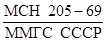

МИНИСТЕРСТВО МОНТАЖНЫХ И СПЕЦИАЛЬНЫХ
СТРОИТЕЛЬНЫХ РАБОТ СССР
ИНСТРУКЦИЯ
ПО ПРОЕКТИРОВАНИЮ ЭЛЕКТРОУСТАНОВОК
СИСТЕМ АВТОМАТИЗАЦИИ
ТЕХНОЛОГИЧЕСКИХ ПРОЦЕССОВ
ВСН 205-84
МИНМОНТАЖСПЕЦСТРОЙ СССР
УТВЕРЖДЕНА
Министерством монтажных и специальных строительных работ СССР 5 апреля 1984г.
СОГЛАСОВАНА
Главным управлением государственного энергетического надзора Министерства энергетики и электрификации СССР, письмо Главгосэнергонадзора № 17-62 от 23.11.83.
Главным управлением пожарной охраны Министерства внутренних дел СССР, письмо ГУПО МВД СССР № 7/6/4162 от 30.12.83.
ЦЕНТРАЛЬНОЕ БЮРО НАУЧНО-ТЕХНИЧЕСКОЙ ИНФОРМАЦИИ
МОСКВА-1985
Инструкция устанавливает основные требования к выполнению (устройству) электрической части систем автоматизации технологических процессов.
Инструкция разработана взамен «Указаний по проектированию электроустановок систем автоматизации производственных процессов» ВСН 205-69/ММСС СССР.
В инструкции нашли отражение изменения, внесенные в последние годы в «Правила устройства электроустановок», строительные нормы и правила, государственные стандарты, учтены результаты рассмотрения проекта инструкции ведущими отраслевыми и специализированными проектными организациями страны. Обобщен опыт работы организаций Главмонтажавтоматики Минмонтажспецстроя СССР по монтажу систем автоматизации технологических процессов в различных отраслях промышленности.
В процессе разработки инструкция согласована: Министерством черной металлургии СССР (письмо Черметэнерго № 08-137 от 19.08.83); Министерством химической промышленности СССР (письмо Управления проектирования и капитального строительства № 05-5-4/1292 от 19.08.83); Министерством приборостроения, средств автоматизации и систем управления СССР (письмо Всесоюзного промышленного объединения по системам автоматизации производства № 15-5-33/282, от 05.09.83); Министерством электротехнической промышленности СССР (письмо Управления развития производственных мощностей № 20/2-9 от 21.09.83); Министерством сельского хозяйства СССР (письмо Главного управления по проектированию сельских зданий и сооружений № 25/2818 от 13.09.83); Министерством автомобильной промышленности СССР (письмо Управления по проектированию предприятий автомобильной промышленности № 23-130/335 от 28.07.83); Министерством транспортного строительства СССР (письмо Главного управления проектно-изыскательских работ № 3002/31-30 от 27.09.83).
Инструкция разработана Государственным ордена Трудового Красного Знамени проектным институтом Проектмонтажавтоматика.
Исполнитель - инж. А.X. Дубровский
|
Министерство монтажных и специальных строительных работ СССР |
Ведомственные строительные нормы |
ВСН 205-84 Минмонтажспецстрой СССР |
|
Инструкция по проектированию электроустановок систем автоматизации технологических процессов |
Взамен  |
1.1. Инструкция распространяется на электроустановки систем автоматизации, проектно-сметная документация которых выполняется в соответствии с требованиями «Временных указаний по проектированию систем автоматизации технологических процессов» ВСН 281-75/Минприбор СССР.
Инструкцией следует руководствоваться при разработке проектно-сметной документации систем автоматизации технологических процессов и при выполнении монтажных работ.
Все действующие нормативные, материалы по проектированию и монтажу электрической части систем автоматизации должны быть приведены в соответствие с настоящей инструкцией.
1.2. Инструкция устанавливает основные требования к выполнению (устройству) электрической части (электроустановок) систем автоматизации: электропитания приборов и средств автоматизации; электрических проводок цепей измерения, регулирования, управления, сигнализации, питания; щитов, пультов, щитовых помещений; зануления (заземления) в производственных помещениях и наружных установках, включая взрыво- и пожароопасные производства.
Инструкция ограничивается рассмотрением электроустановок систем автоматизации напряжением до 380 В переменного и 440, В постоянного тока.
Требования инструкции исходят из общих требований «Правил устройства электроустановок» (ПУЭ); инструкция развивает их применительно к электроустановкам систем автоматизации технологических процессов.
1.3. Инструкция не распространяется на электроустановки систем автоматизации предприятий по производству и хранению взрывчатых веществ, шахт, рудников, опытных и специальных объектов.
Примечание. Требования инструкции могут быть применены к электроустановкам систем автоматизации опытных и специальных объектов, а также к отдельным видам производств со специфическим технологическим процессом в той мере, в какой они не изменены специальными правилами.
1.4. Электроустановки систем автоматизации должны отвечать требованиям ПУЭ, «Правил технической эксплуатации электроустановок потребителей», «Правил техники безопасности при эксплуатации электроустановок потребителей», отраслевых норм технологического проектирования, отраслевых правил безопасности, стандартов безопасности труда и настоящей инструкции.
Требования инструкции исходят из условия, что эксплуатация электроустановок систем автоматизации производится квалифицированным обслуживающим персоналом (персоналом, прошедшим проверку знаний в объеме, обязательном для выполняемой работы, и имеющим квалификационную группу по технике безопасности) в соответствии с требованиями документов, указанных в настоящем пункте.
1.5. Принимаемые решения по выполнению электрической части систем автоматизации должны учитывать особенности выполнения электроустановок других назначений автоматизируемого объекта.
Согласование вопросов размещения щитов, пультов, отдельно стоящих приборов и средств автоматизации, прокладки трасс электрических и других проводок систем автоматизации с организациями (подразделениями), проектирующими строительную, технологическую и электрическую части автоматизируемого объекта (агрегата, установки, цеха и т.д.), осуществляется в процессе проектирования путем выдачи необходимых заданий.
|
Внесена |
Утверждена |
Срок введения в действие |
1.6. При разработке проектно-сметной документации надлежит предусматривать мероприятия, обеспечивающие выполнение электромонтажных работ индустриальными методами с широким применением закладных частей и деталей, комплектных крупноблочных устройств и укрупненных монтажных узлов, а также выделение магистральных трасс с кабелями повышенной жильности и др.
1.7. Применяемые в электроустановках систем автоматизации приборы, аппаратура и материалы должны соответствовать требованиям стандартов или технических условий, утвержденных в установленном порядке.
1.8. Конструкция, исполнение, способ установки, класс изоляции приборов, аппаратов и средств автоматизации должны соответствовать условиям окружающей среды и параметрам электрических цепей.
1.9. Терминология, принятая в инструкции, полностью соответствует терминологии (определениям) ПУЭ.
1.10. Требования, касающиеся выполнения электроустановок систем автоматизации во взрыво- и пожароопасных зонах, излагаются в разделах 6 и 7.
2.1. Требования настоящего раздела распространяются на питание электроприемников систем автоматизации: контрольно-измерительных приборов, регулирующих устройств, электродвигателей исполнительных механизмов и электроприводов задвижек (вентилей), приборов сигнализации, электро-, пневмо-, гидропреобразователей и других средств автоматизации напряжением, не превышающим значений, указанных в п. 1.2.
2.2. Система электропитания контрольно-измерительных приборов и средств автоматизации (далее - система электропитания) должна обеспечивать требуемую надежность (бесперебойность) питания, надлежащее качество электроэнергии (допустимые отклонение и колебание напряжения, несинусоидальность формы кривой, пульсацию напряжения), экономичность, удобство и безопасность эксплуатации.
2.3. Выбор схемы питания, напряжения, рода тока и аппаратуры для системы электропитания должен быть согласован с системой электроснабжения автоматизируемого объекта (агрегата, установки, цеха и т.п.).
2.4. В системах электропитания следует применять напряжение, принятое для электроснабжения автоматизируемого объекта, которое может быть использовано без дополнительного преобразования.
Применение приборов, аппаратов и средств автоматизации с номинальным напряжением, которое отличается от имеющегося на автоматизируемом объекте, должно быть технически и экономически обосновано.
а) трехфазного переменного тока 380/220 В с глухозаземленной нейтралью;
б) трехфазного переменного тока 220 и 380 В с изолированной нейтралью;
в) постоянного тока 110 или 220 В.
Питание от указанных систем следует применять во всех случаях, когда этому не препятствуют какие-либо местные условия (например, отсутствие централизованного электроснабжения автоматизируемого объекта от энергосистемы и питание его от локальных источников напряжением, отличающимся от указанных) и если не обоснована целесообразность применения приборов и средств автоматизации других напряжений.
2.6. При использовании в системах автоматизации приборов, аппаратов и средств автоматизации номинальным напряжением, отличающимся от указанных в п. 2.5, для их питания должны применяться либо имеющиеся на автоматизируемом объекте системы соответствующих напряжений, либо специальные трансформаторы или преобразователи (выпрямители), предусматриваемые в системах электропитания. В качестве преобразователей для электроприемников постоянного тока должны, как правило, использоваться невращающиеся преобразователи.
2.7. Если для электроснабжения автоматизируемого объекта применены системы трехфазного переменного тока 660 В, то питание одно- и трехфазных электроприемников систем автоматизации должно осуществляться через понижающие одно- или трехфазные трансформаторы.
2.8. В цепях управления электродвигателями исполнительных механизмов и электроприводов задвижек (вентилей) в помещениях всех категорий опасности в отношении поражения людей электрическим током допускается применение того же напряжения, что и в главных (силовых) цепях электродвигателей, включая напряжение 380 В переменного и 440 В постоянного тока. При этом включение аппаратов управления и защиты, а также выполнение зануления (заземления) должны удовлетворять требованиям пп. 2.47-2.50 и раздела 5.
2.9. Питание схем производственной сигнализации рекомендуется осуществлять от системы электропитания напряжением 220 В переменного или постоянного тока. Применение пониженных или преобразованных напряжений должно быть обусловлено необходимостью использования более надежной аппаратуры, удобством эксплуатации и конструктивными требованиями.
2.12. Питание электрифицированного инструмента и светильников переносного освещения для работ в установках автоматизации должно, как правило, осуществляться от распределительной электрической сети автоматизируемого объекта с соблюдением требований подключения переносных электроприемников, указанных в «Правилах техники безопасности при эксплуатации электроустановок потребителей» и ПУЭ.
Допускается при необходимости предусматривать питание электрифицированного инструмента и светильников переносного освещения от систем электропитания. При этом:
а) напряжение питания электрифицированного инструмента должно быть не выше 220 В в помещениях без повышенной опасности и не выше 42 В в помещениях с повышенной опасностью, вне помещений и при работах в шкафных щитах (щитовые помещения относятся к помещениям с повышенной опасностью при нетокопроводящих полах и к особо опасным - при токопроводящих полах). При невозможности обеспечить работу электроинструмента на напряжении до 42 В в помещениях с повышенной опасностью и вне помещений допускается применение электроинструмента на напряжение до 220 В, но с обязательным использованием защитных средств (диэлектрических перчаток, галош, ковриков) и надежного зануления (заземления) корпуса электроинструмента (см. пп. 5.20 и 5.21); как правило, в этих случаях рекомендуется также применять для питания электрифицированного инструмента разделяющие трансформаторы (см. п. 2.19).
В помещениях особо опасных разрешается работать с электрифицированным инструментом на напряжении только до 42 В с обязательным применением защитных средств.
Во всех случаях в зависимости от категории помещения по степени опасности поражения электрическим током должен применяться электрифицированный инструмент, имеющий класс защиты человека от поражения электрическим током, установленный стандартами безопасности труда;
б) напряжение питания переносных ламп в помещениях с повышенной опасностью, особо опасных и в шкафных щитах, обслуживаемых извне (см. п. 3.14), если в последних требуется переносное освещение, должно быть не выше 42 В; при наличии особо неблагоприятных условий (теснота, неудобное положение работающего, соприкосновение с большими хорошо зануленными или заземленными поверхностями), а также при работах вне помещений - 12 В.
2.13. Питание местного стационарного освещения фасадов щитов, переносного освещения и электрифицированного инструмента напряжением до 42 В должно осуществляться от понижающих трансформаторов с соблюдением требований зануления (заземления) и прокладки электропроводок, изложенных в пп. 5.20 и 5.21. Применение для этих целей автотрансформаторов не допускается.
2.14. В качестве источника питания для системы электропитания должны использоваться цеховые распределительные подстанции, распределительные щиты, питающие сборки системы электроснабжения автоматизируемого объекта, к которым не подключена резко-переменная нагрузка (крупные электродвигатели, электропечи и т.п.).
Допускается в отдельных случаях при трудности использования силовой сети для неответственных установок присоединять системы электропитания к осветительной сети (щитам освещения) автоматизируемого объекта, если питание электрического освещения осуществляется от общих с силовой нагрузкой трансформаторов и возможное, хотя бы кратковременное, исчезновение напряжения в сети освещения и, следовательно, в системе электропитания не приводит к нарушению технологического процесса.
2.15. Источник питания должен иметь достаточную мощность и обеспечивать требуемое напряжение на зажимах электроприемников системы электропитания (см. п. 2.16).
Отклонение напряжения на шинах источника питания не должно превышать значений, при которых обеспечивается нормальная работа наиболее удаленных или наиболее чувствительных к отклонениям напряжения электроприемников в возможных наихудших для системы электроснабжения автоматизируемого объекта нагрузочных режимах.
В случаях, когда обеспечить допустимые отклонения напряжения на зажимах наиболее удаленных или наиболее чувствительных электроприемников оказывается невозможным или весьма затруднительным, необходимо предусматривать соответствующие технические мероприятия (например, перенос с шин источника питания большой силовой нагрузки, выделение для системы электропитания самостоятельных питающих линий, минуя промежуточные силовые щиты, установку специальных стабилизированных источников питания и т.д.).
2.16. Допускаются следующие отклонения напряжения на зажимах электроприемников:
а) контрольно-измерительных приборах, регулирующих устройствах и т.д. - не более значений, указанных заводами-изготовителями в стандартах, технических условиях и т.п.; при отсутствии указаний заводов-изготовителей - ±5% номинального;
б) электродвигателях исполнительных механизмов и электроприводов задвижек (вентилей) - от -5 до +10% номинального;
в) электролампах схем сигнализации (если для них с целью продления срока службы не предусматривается пониженное напряжение), лампах освещения щитов - от -2,5 до +5% номинального;
г) аппаратах управления (например, катушек магнитных пускателей, электромагнитных реле и т.д.) - не более значений, указанных заводами-изготовителями; при отсутствии указаний заводов-изготовителей - от -5 до +10% номинального;
д) в цепях напряжением 12 и 42 В допускаются потери напряжения до 10%, считая от выводов низшего напряжения понижающего трансформатора.
2.18. Питание электродвигателей исполнительных механизмов должно осуществляться от сборок или щитов питания, предусматриваемых в системе электропитания.
Питание электроприводов задвижек (вентилей) в зависимости от их суммарной мощности и режимов работы должно осуществляться: от общих с другими электроприемниками щитов системы электропитания; от цеховых распределительных щитов системы электроснабжения автоматизируемого объекта. Во всех указанных случаях должна быть обеспечена принятая в системе электропитания надежность (бесперебойность) питания (см. пп. 2.27 и 2.28).
2.19. При необходимости применения для питания электрифицированного инструмента разделяющих трансформаторов (см. п. 2.12а) необходимо руководствоваться следующим:
а) разделяющие трансформаторы должны удовлетворять специальным техническим условиям в отношении повышенной надежности конструкции и повышенных испытательных напряжений;
б) от разделяющего трансформатора разрешается питание только одного электроприемника с номинальным током плавкой вставки или расцепителя автомата на первичной стороне не более 15 А;
в) вторичное напряжение разделяющего трансформатора должно быть не выше 380 В;
г) зануление (заземление) вторичной обмотки разделяющего трансформатора и корпуса питающегося от него электроприемника запрещается; корпус трансформатора должен быть занулен (заземлен), [I-7-44]*.
_______________
* Включенные в текст инструкции выдержки из ПУЭ помечены на полях чертой, а номера пунктов ПУЭ, из которых сделаны выдержки, указаны в квадратных скобках.
Эти требования не распространяются на трансформаторы, устанавливаемые по указанию заводов-изготовителей для питания отдельных типов приборов и средств автоматизации с целью повышения их помехоустойчивости.
2.20. Выбор схемы электропитания определяется требуемой бесперебойностью электроснабжения, территориальным расположением источников питания и электроприемников, величиной нагрузки, особенностями технологического процесса, удобством эксплуатации, а также другими характерными особенностями автоматизируемого объекта.
Щиты и сборки питания должны располагаться возможно ближе к питаемым группам электроприемников (см. пп. 6.8 и 7.6).
Если количество электроприемников ограничено и нецелесообразно предусматривать специальный щит питания, то аппаратуру управления и защиты системы электропитания допускается размещать на щитах, где установлены приборы, или на релейных щитах; для электроприводов задвижек (вентилей) и в этом случае целесообразно также предусматривать отдельно сборки питания.
Рис 1. Основные звенья схемы электропитания систем автоматизации (линия с одним штрихом - питающая сеть, с двумя штрихами - распределительная сеть)
2.22. Схема электропитания подразделяется на следующие основные звенья (рис. 1):
а) питающая сеть (питающие линии) - сеть от источников питания до щитов и сборок системы электропитания;
б) распределительная сеть - сеть от щитов и сборок системы электропитания до электроприемников; к распределительной сети относятся также цепи всех назначений, связывающие первичные приборы и датчики с вторичными приборами и регулирующими устройствами.
2.23. Питающая и распределительная сети систем электропитания могут выполняться: однофазными двухпроводными (с одним фазным и одним нулевым проводами); двухфазными двухпроводными (с двумя фазными проводами); двухпроводными постоянного тока**; трехфазными трехпроводными и трехфазными четырехпроводными.
_______________
** В инструкции рассматриваются только двухпроводные сети постоянного тока без заземления одного из полюсов.
2.24. Одно- и двухфазные двухпроводные сети должны применяться при наличии только однофазных электроприемников, если это допустимо по условию равномерной нагрузки фаз источника питания.
2.25. Трехфазные трехпроводные сети должны применяться:
а) для смешанных электроприемников, трех- и однофазных одинакового напряжения или только трехфазных электроприемников - при питании от системы с изолированной нейтралью;
б) для однофазных электроприемников, когда устройство двухпроводной сети недопустимо по условию равномерной нагрузки фаз источника питания.
2.26. Трехфазные четырехпроводные сети должны применяться:
а) для смешанных электроприемников, трех- и однофазных разных напряжений или только трехфазных - при питании от системы с глухозаземленной нейтралью;
б) для однофазных электроприемников, когда устройство двухпроводной сети недопустимо по условию равномерной нагрузки фаз источника питания.
а) количество независимых вводов (питающих линий) в системе электропитания должно быть равно количеству независимых вводов, питающих объект в целом.
Так, если на объекте имеются потребители 1 и 2 категорий и питание объекта осуществлено по двум независимым линиям, то система электропитания также должна иметь два ввода от двух независимых источников питания. Если объект отнесен к 3 категории и питание его осуществлено по одной линии, то система электропитания может иметь один ввод. Если на объекте имеются потребители различных категорий, то электроприемники системы автоматизации относятся к потребителям высшей категории;
б) пропускная способность каждой питающей линии системы электропитания должна определяться по 100%-ной нагрузке данной системы;
в) режим работы питающих линий системы электропитания (находятся в работе обе линии или одна) принимается такой же, как режим питания самого источника питания;
г) в схемах электропитания систем автоматизации объектов, отнесенных к 1 и 2 категориям электроснабжения, автоматический ввод резерва (АВР), как правило, не предусматривается, если имеется АВР в системе электроснабжения, в частности, на источнике питания. АВР в схемах электропитания систем автоматизации следует предусматривать в случаях, когда питающие линии систем электропитания проложены в неблагоприятных условиях или имеются другие факторы, способствующие возникновению в них повреждений. Действие АВР электропитания не должно приводить к нарушению работы систем автоматизации;
д) в схемах электропитания систем автоматизации объектов, отнесенных к 3 категории электроснабжения, допускается предусматривать резервные вводы (с АВР или ручным включением) во всех случаях, когда на основании анализа конкретной схемы электроснабжения объекта имеется возможность повысить надежность питания системы автоматизации.
В случаях, когда на объекте выделены агрегаты или установки, отнесенные в системе электроснабжения к потребителям особой группы 1 категории, надежность (бесперебойность) питания их систем автоматизации должна отвечать требованиям ПУЭ, предъявляемым к питанию потребителей особой группы 1 категории.
Рис. 2. Схема питающей сети системы электропитания:
а - радиальная с односторонним питанием; б - радиальная с двухсторонним питанием; в - радиально-магистральная (смешанная); г - магистральная с односторонним питанием; д - магистральная с двухсторонним питанием от одного источника (линия от источника питания № 2 отсутствует) и от двух источников (пунктирная линия исключается)
2.29. В соответствии с требованиями резервирования и взаимным расположением щитов (сборок) системы электропитания и источников питания схема питающей сети может быть следующей конфигурации (рис. 2):
а) радиальной с односторонним или двухсторонним питанием;
б) радиально-магистральной (смешанной);
в) магистральной с односторонним или двухсторонним питанием от одного источника или двух независимых.
2.30. Радиальные схемы следует применять в тех случаях, когда щиты (сборки) питания размещаются в различных направлениях от источника питания и расстояние между щитами больше, чем от источника до щитов. При этом схемы с односторонним питанием должны применяться для щитов (сборок), допускающих питание по одной линии от одного источника, а схемы с двухсторонним питанием - при необходимости питания щитов (сборок) от двух независимых источников.
2.31. Магистральные схемы следует применять для электроснабжения группы щитов (сборок), допускающих перерыв в питании. Питание по магистральным схемам от двух независимых источников должно применяться для щитов (сборок), которые необходимо питать по двум линиям от двух независимых источников.
2.32. Схема распределительной сети должна, как правило, строиться по радиальному принципу: каждый электроприемник присоединяется к щиту или сборке питания отдельной радиальной линией.
2.33. Питание приборов, аппаратов и средств автоматизации параллельных технологических потоков должно, как правило, осуществляться по отдельным питающим линиям от распределительных щитов (источников питания) системы электроснабжения указанных технологических потоков.
2.34. При проектировании систем электропитания во всех случаях следует стремиться применять типовые блоки и сборки питания, серийно выпускаемые промышленностью.
2.35. Аппаратура управления и защиты, устанавливаемая в системе электропитания, должна обеспечивать: включение и отключение электроприемников и участков сетей в нормальном режиме работы; надежное отсоединение электроприемников и линий для ревизий и ремонтных работ; защиту от всех видов коротких замыканий и перегрузки, если она требуется (см. п. 2.37).
2.36. В питающей и распределительной сетях системы электропитания должны, как правило, применяться следующие сочетания аппаратов управления и защиты, обеспечивающие выполнение требований п. 2.35:
а) в питающих линиях - автоматический выключатель; выключатель - предохранители (см. п. 2.40);
б) в цепях электродвигателей исполнительных механизмов и электроприводов задвижек (вентилей) - автоматический выключатель - магнитный пускатель; выключатель - предохранители - магнитный пускатель (см. пп. 2.47 и 2.48).
Для защиты от перегрузки электродвигателей (см. п. 2.37) должны использоваться тепловые расцепители или гидравлические замедлители срабатывания, встроенные в автоматические выключатели, либо тепловые элементы магнитных пускателей; при защите автоматическими выключателями тепловые элементы в магнитных пускателях предусматриваться не должны, если расцепители автоматических выключателей достаточно чувствительны к токам перегрузки;
в) в цепях контрольно-измерительных приборов, регулирующих устройств, трансформаторов, выпрямителей и т.д. - выключатель - предохранители; автоматический выключатель (если он обладает достаточной чувствительностью к токам короткого замыкания и если это оправдано экономически и требованиями удобства эксплуатации);
г) в питающих цепях схем производственной сигнализации - выключатель - предохранители; автоматический выключатель (см. п. 2.36, в);
д) в цепях стационарного освещения щитов - выключатель - предохранитель (см. п. 2.45).
2.37. Питающая и распределительная сети системы электропитания, выполненные в соответствии с требованиями раздела 4, относятся, как правило, к сетям, не требующим защиты от перегрузки, и должны защищаться от коротких замыканий (см. пп. 6.4 и 7.5).
Отдельные электроприемники, такие как электродвигатели исполнительных механизмов и электроприводов задвижек (вентилей), которые по характеру своей работы могут подвергаться технологическим перегрузкам, рекомендуется защищать от коротких замыканий и перегрузки, если это не противоречит другим требованиям (например, требованию обязательности действия исполнительного механизма или задвижки в любых случаях, даже если это приводит их к выходу из строя).
а) напряжение и номинальный ток аппаратов должны соответствовать напряжению и допустимому длительному току цепи. Номинальные токи аппаратов защиты следует выбирать по возможности наименьшими по расчетным токам отдельных электроприемников; при этом аппараты защиты не должны отключать цепь при кратковременных перегрузках (например, при пусках электродвигателей);
б) аппараты управления должны включать пусковой ток электроприемника и отключать полный рабочий ток, а также допускать отключение пускового тока;
в) аппараты защиты по своей отключающей способности должны соответствовать токам короткого замыкания в начале защищаемого участка; отключение защищаемой линии или электроприемника должно осуществляться с наименьшим временем;
г) при коротких замыканиях по возможности должна быть обеспечена селективность работы защитных аппаратов с ниже и выше стоящими защитными аппаратами; рекомендуется номинальные токи каждого последующего по направлению тока аппарата защиты (предохранителей и тепловых расцепителей) принимать на две ступени ниже, чем предыдущего, если это не приводит к завышению сечения проводов (см. п. 2.53);
д) аппараты защиты должны обеспечивать надежное автоматическое отключение одно- и многофазных коротких замыканий в сетях с глухозаземленной нейтралью и двух-, трехфазных коротких замыканий в сетях с изолированной нейтралью в наиболее удаленной точке защищаемой цепи. Для этого токи однофазного короткого замыкания в сетях с глухозаземленной нейтралью и двух-, трехфазного короткого замыкания в сетях с изолированной нейтралью должны превышать не менее чем:
в 3 раза номинальный ток плавкой вставки предохранителя данной цепи;
в 3 раза номинальный ток нерегулируемого расцепителя или ток уставки регулируемого расцепителя автоматического выключателя, имеющего обратно зависимую от тока характеристику;
в 1,4 раза ток уставки мгновенного срабатывания автоматического выключателя, имеющего только электромагнитный расцепитель (отсечку) с номинальным током до 100 А (см. п. 6.5), [1-7-79];
е) в сетях с изолированной нейтралью, защищаемых только от коротких замыканий, в которых сечения проводников выбраны с учетом требований пп. 2.52 и 2.53, допускается указанную в п. 2.38,д расчетную проверку кратности тока короткого замыкания не выполнять; в сетях с глухозаземленной нейтралью проверка по п. 2.38,д является обязательной.
2.39. Аппараты управления и защиты должны, как правило, устанавливаться во всех линиях и присоединениях питающей и распределительной сетей.
Допускается в распределительной сети предусматривать общие аппараты управления и защиты для группы электроприемников, если они связаны общим технологическим процессом и не требуют индивидуальной защиты, а применение групповых аппаратов не создает неудобств в эксплуатации.
Защитные аппараты на вводах в щиты и сборки питания могут не устанавливаться, если аппараты защиты головного участка питающей линии обеспечивают надежную защиту всей линии (см. п. 2.38, д), а все присоединения распределительной сети, питающиеся от указанных щитов и сборок, имеют индивидуальную защиту.
При магистральной схеме исполнения питающей сети аппараты управления и защиты должны устанавливаться по мере уменьшения сечений линий на вводе каждого щита и сборки питания; если вся магистраль выполняется проводниками одного сечения, то необходимость установки аппаратов управления и защиты на вводах щитов и сборок питания определяется, помимо требований удобства эксплуатации, требованиями селективности (для аппаратов защиты).
2.41. В распределительной сети аппараты управления и защиты должны устанавливаться непосредственно в местах присоединений отдельных цепей на щитах и сборках питания (см. п. 2.21).
В цепях электроприемников, имеющих встроенные выключатели и предохранители, аппараты управления и защиты могут не предусматриваться, если щит питания совмещен со щитом, где установлен данный электроприемник; при отдельно стоящем щите питания (на расстоянии более 6 м), когда проводники, питающие электроприемник, выходят за пределы щита, в начале ответвления должны устанавливаться аппараты управления и защиты.
В цепях электроприемников, имеющих только встроенный предохранитель, аппарат управления должен предусматриваться независимо от места установки щита питания.
2.42. В питающей и распределительной сетях (одно- и двухфазных двухпроводных, трехфазных трех- и четырехпроводных систем с изолированной и глухозаземленной нейтралью, в двухпроводных сетях постоянного тока) аппараты управления и защиты должны устанавливаться в нормально не зануленных и не заземленных фазных проводниках (полюсах) (см. пп. 5.24 и 6.7).
При питании от систем с глухозаземленной нейтралью допускается в двухпроводных цепях вторичного напряжения понижающих трансформаторов, вторичных цепях выпрямителей, предусматриваемых в системах электропитания (см. п. 2.6), ограничиваться установкой аппаратов защиты только в одном проводе (см. пп. 2.44 и 5.22).
2.43. В цепях питания регуляторов и приборов, состоящих из нескольких элементов, работающих взаимосвязано (например, отдельные блоки регуляторов, датчики и вторичные приборы), должны устанавливаться общие аппараты управления и защиты. На ответвлениях к отдельным элементам регуляторов, которые могут при необходимости отключаться (например, регулирующий прибор при дистанционном управлении), по возможности должны дополнительно устанавливаться индивидуальные выключатели.
При одном присоединении на стороне вторичного напряжения аппараты управления и защиты в этой цепи могут не предусматриваться.
Для обеспечения селективности действия аппараты защиты со стороны первичного напряжения трансформаторов должны отличаться по номинальному току не менее чем на одну ступень в большую сторону от аппаратов защиты со стороны вторичного напряжения с учетом коэффициента трансформации.
2.45. В цепях питания стационарно установленного освещения шкафных щитов и местного стационарного освещения шкафных и панельных щитов (см. пп. 2.10 и 2.11) должны предусматриваться выключатель и предохранитель в фазном проводе.
2.46. Предохранители в закрытых держателях должны устанавливаться таким образом, чтобы питающие провода присоединялись к контактному винту, а отходящие к электроприемникам - к контактной гильзе. Подвод питающих проводов к предохранителям должен осуществляться сверху.
При включении катушек на междуфазное напряжение электродвигатели могут защищаться автоматическими выключателями или предохранителями.
При включении катушек на фазное напряжение в качестве защитных аппаратов, должны применяться трехполюсные автоматические выключатели. Один конец катушки магнитного пускателя должен быть надежно присоединен к нулевому проводнику питающей линии или отдельному изолированному проводнику, присоединенному к нулевой точке сети.
Примечание. Допускается при включении катушек магнитных пускателей на фазное напряжение применять предохранители, если предусмотрены специальные устройства, действующие на отключение пускателя при сгорании предохранителей в одной или любых двух фазах. Предохранители для защиты указанных электродвигателей при междуфазном и фазное включениях катушек магнитных пускателей рекомендуется применять только в тех случаях, когда установка автоматических выключателей по каким-либо причинам не может быть обеспечена (невозможность поставки автоматов, реконструкция действующего предприятия и т.д.).
При питании цепей управления группы электродвигателей от постороннего источника питания должны быть предусмотрены блокировочные зависимости, обеспечивающие:
а) отключение цепей управления каждого электродвигателя при срабатывании его автомата защиты (например, путем введения в цепь управления электродвигателя блок-контакта автомата защиты либо иным способом);
б) отключение главных цепей электродвигателей во всех случаях исчезновения напряжения и недопустимости самозапуска электродвигателей (при исчезновении и последующем восстановлении напряжения).
Напряжение цепей управления электродвигателей в сложных разветвленных схемах, питающихся от постороннего источника, не должно, как правило, превышать 220 В; защита электродвигателей должна осуществляться трехполюсными автоматическими выключателями.
2.49. Защита цепей управления электродвигателей исполнительных механизмов и электроприводов задвижек (вентилей), питающихся от главных (силовых) цепей, когда цепи управления и силовые цепи выполнены проводниками одного сечения, осуществляется, как правило, защитными аппаратами, установленными в главных цепях электродвигателей; защита цепей управления, питающихся от постороннего источника, должна осуществляться в соответствии с требованиями п. 2.42.
2.50. При управлении электродвигателями исполнительных механизмов и электроприводов задвижек (вентилей) из нескольких мест или при наличии нескольких видов управления (например, автоматического и дистанционного) должны предусматриваться переключающие аппараты (ключи выбора режима), исключающие возможность пуска электродвигателей из нескольких мест.
Ключи выбора режима в зависимости от требований удобства эксплуатации могут устанавливаться как по месту непосредственно у механизма, так и на щите, с которого ведется управление; не следует совмещать в одном ключе функции ключа выбора режима и аппаратов управления электродвигателями.
Аппараты управления по месту, если электроприводы управляются из нескольких мест, должны предусматриваться только в тех случаях, когда затруднена возможность опробования со щита управления (например, щит и задвижки в разных помещениях), либо когда это диктуется необходимостью, помимо других видов управления, иметь возможность независимого управления по месту (например, при необходимости пуска первой очереди производства без централизованного или автоматического управления).
При выборе конкретных типов аппаратов управления и ключей выбора режима работы электродвигателей исполнительных механизмов и электроприводов задвижек (вентилей) должны учитываться также требования стандартов безопасности труда.
2.51. Сечения проводников питающей и распределительной сетей системы электропитания должны выбираться по условию нагревания электрическим током и механической прочности с последующей проверкой по потере напряжения.
Сечения проводников на любом участке сетей должны удовлетворять всем трем условиям.
2.52. Выбор сечений проводников по условию нагревания электрическим током осуществляется по допустимым токовым нагрузкам на провода и кабели (по таблицам главы 1-3 ПУЭ) с учетом условий прокладки (см. п. 4.13).
При этом расчетный ток, по которому выбирается сечение, должен приниматься как большая величина, определяемая двумя условиями: нагреванием проводников длительным расчетным током и соответствием выбранному аппарату защиты, т.е. допустимой кратностью номинального тока или тока срабатывания защитного аппарата к длительно допустимому току проводов и кабелей.
2.53. Для линий, защищаемых только от коротких замыканий (см. п. 2.37), допустимая кратность номинального тока или тока срабатывания защитного аппарата к длительно допустимому току проводов и кабелей должна быть не более:
300% номинального тока плавких вставок предохранителей;
450% тока уставки автоматического выключателя, имеющего только максимальный мгновенно действующий расцепитель (отсечку);
100% номинального тока расцепителя автоматического выключателя с нерегулируемой обратно зависимой характеристикой (независимо от наличия или отсутствия отсечки);
125% тока трогания расцепителя автоматического выключателя с регулируемой обратно зависимой от тока характеристикой; при наличии на автоматическом выключателе отсечки ее кратность срабатывания не ограничивается [III-1-7].
Для линий, защищаемых от коротких замыканий и перегрузки, см. п. 6.4.
2.54. Провода и кабели ответвлений к электродвигателям исполнительных механизмов и электроприводов задвижек (вентилей) выбираются по номинальному току электродвигателей (см. п. 6.4).
2.55. По условию механической прочности провода и кабели системы электропитания должны иметь сечения не менее минимально допустимых сечений проводников в установках автоматизация, указанных в п. 4.14.
2.56. Проверка проводов и кабелей по допустимой потере напряжения должна установить, что отклонение напряжений на зажимах электроприемников не превышает допустимых значений, указанных в п. 2.16. Проверочный расчет допускается выполнять без учета индуктивного сопротивления линий, считая сеть симметрично нагруженной.
2.57. В питающей и распределительной сетях системы электропитания сечения нулевых жил проводов и кабелей, независимо от того, используются они в качестве нулевых защитных проводников или нет (см. п. 5.7), должны выбираться:
а.) в однофазных двухпроводных сетях - равными фазному;
б) в трехфазных четырехпроводных сетях - не менее 50% сечения фазных жил медных, алюмомедных и алюминиевых проводов и кабелей; однофазная нагрузка при этом должна быть равномерно распределена между фазами (см. п. 2.17).
3.1. Требования настоящего раздела распространяются на щиты и пульты систем автоматизации: щиты (пульты) контроля и управления, релейные щиты, щиты питания и т.п., устанавливаемые в производственных и специальных щитовых помещениях (операторных, диспетчерских, аппаратных и т.п.).
В разделе содержится также ряд требований к щитовым помещениям, обусловленных ПУЭ.
Требования раздела составлены применительно к щитам и пультам систем автоматизации, изготовляемым заводами Главмонтажавтоматики Минмонтажспецстроя СССР. Эти требования распространяются и на другие конструктивно аналогичные типы щитов и пультов, если к последним дополнительно не предъявляются специальные требования.
3.2. Напряжение, вводимое в щиты и пульты (цепями измерения, управления, сигнализации и т.п.), устанавливаемые в производственных и щитовых помещениях всех категорий опасности в отношении поражения людей электрическим током, не должно превышать 380 В переменного и 440 В постоянного тока.
Напряжение освещения щитов и напряжение, подводимое к розеткам для питания электрифицированного инструмента и светильников переносного освещения, должно соответствовать величинам, указанным в пп. 2.10-2.13.
3.3. В пределах щитов (щитовых помещений), где по условиям безопасности при выполнении работ не разрешается применение электрифицированного инструмента и переносного освещения на напряжение выше 42 В (см. п. 2.12), допускается для присоединения указанных электроприемников предусматривать распределительную сеть, питающуюся от понижающих трансформаторов с вторичным напряжением до 42 В.
Цепи напряжением до 42 В должны прокладываться отдельно от других цепей. Штепсельные соединения (розетки, вилки) на напряжение до 42 В, по своему конструктивному выполнению должны отличаться от обычных штепсельных соединений на напряжение 220 В и исключать возможность включения вилок на напряжения 12 и 42 В в розетки напряжением 220 В. Штепсельные соединения на 12 и 42 В должны иметь окраску, отличающуюся от окраски штепсельных соединений на 220 В. Присоединение электрифицированного инструмента и светильников переносного освещения к розеткам должно осуществляться посредством гибкого шлангового многожильного провода.
3.4. Для питания электрифицированного инструмента и светильников переносного освещения на напряжение до 42 В, работа с которыми производится вне щита (щитового помещения), в местах, где не допускается применение более высокого напряжения (см. п. 2.12), должны применяться переносные понижающие трансформаторы с вторичным напряжением до 42 В.
3.5. Цепи питания местного стационарного освещения щитов напряжением до 42 В (см. п. 2.11) должны подключаться непосредственно к стационарно установленным в щитах понижающим трансформаторам без штепсельных разъемов и прокладываться отдельными пакетами.
3.6. При присоединении к сети понижающих стационарно установленных и переносных трансформаторов с вторичным напряжением до 42 В для питания электрифицированного инструмента, светильников переносного и стационарного местного освещения (см. п. 2.12) должны соблюдаться требования заземления, указанные в п. 5.20.
3.7. Щиты систем автоматизации подразделяются:
а) по исполнению - щиты панельные, щиты шкафные;
б) по назначению - щиты (пульты) оперативные (с которых осуществляются контроль и управление технологическим процессом), щиты неоперативные (предназначенные для установки аппаратов и приборов, не используемых непосредственно для управления технологическим процессом и наблюдения за его ходом).
3.8. Щиты панельные предназначены для установки в специальных щитовых помещениях (операторных, диспетчерских, аппаратных и т.п.), в которые имеет доступ персонал, обслуживающий системы автоматизации; щиты шкафные - для непосредственной установки в производственных помещениях.
При этом должны соблюдаться следующие требования (см. пп. 6.8 и 7.6):
а) во всех случаях исполнение аппаратов и приборов, устанавливаемых на щитах (пультах), а также исполнение самих щитов (пультов) должно отвечать условиям окружающей среды производственного или щитового помещения;
б) в сухих (нормальных) и влажных производственных помещениях допускается открытая установка оперативных и неоперативных шкафных щитов (пультов) в местах, наиболее удобных для управления автоматизируемым оборудованием и его контроля;
в) в помещениях сырых, особо сырых, жарких, пыльных, с химически активной средой рекомендуется оперативные щиты (пульты) и относящиеся к ним вспомогательные неоперативные щиты (релейные, питания и т.п.) устанавливать в специально выделенных щитовых помещениях (застекленных операторных, помещениях управления и т.п.) либо предусматривать выносные щитовые помещения (в пристройках и т.п.) и применять в них панельные щиты. Для неоперативных щитов, устанавливаемых в указанных производственных помещениях (щитов с датчиками, первичными приборами и т.п.), должны использоваться шкафные щиты, рассчитанные на применение в условиях повышенной влажности, высоких или низких температур, воздействия агрессивных сред и т.д.
3.9. Оперативные и неоперативные щиты (пульты) в наружных установках должны, как правило, устанавливаться в специальных щитовых помещениях (операторных, диспетчерских, аппаратных и т.п.). В случаях необходимости открытой установки отдельных неоперативных щитов должны применяться щиты специального исполнения, рассчитанные на работу в условиях наружных производственных установок.
3.10. При установке оперативных и неоперативных щитов (пультов) в производственных помещениях должны быть обеспечены удобство эксплуатации, безопасность обслуживания, пожарная безопасность, защита от механических повреждений, грызунов и биологических вредителей; необходимо также исключить возможность попадания на щиты (пульты) воды, пара, газов, кислот, горюче-смазочных материалов.
При угле открытия шкафных щитов 90-110° это расстояние должно исчисляться от открытой на 90° двери; при угле открытия дверей 170° - от корпуса щита.
3.12. При установке панельных щитов в щитовых помещениях должны соблюдаться следующие требования:
а) расстояние от наиболее выступающих открытых токоведущих частей аппаратов* и приборов, расположенных на противоположно установленных рядах щитов, должно быть не менее 1500 мм, причем ширина прохода в свету между рядами щитов должна составлять не менее 800 мм;
______________
* Здесь и далее под аппаратами понимаются и установочные изделия - сборки зажимов, предохранители, выключатели и т.п.
б) расстояние от наиболее выступающих открытых токоведущих частей аппаратов и приборов, установленных на внутренних стенках щита, до расположенной сзади стены помещения, должно быть не менее 1000 мм при ширине прохода в свету не менее 800 мм. Допускается сужение прохода в отдельных местах (например, за счет строительных конструкций) до 600 мм;
в) ширина проходов (в свету) для обслуживания перед щитом (без учета требований хорошего обзора щита) должна быть не менее 800 мм;
г) проходы для обслуживания между щитами при длине щита более 7 м должны иметь два выхода;
д) проходы для обслуживания перед щитом, между щитами и сзади щитов не допускается использовать как основные или запасные проходы в другие помещения; по этим проходам не допускается также транспортирование в другие помещения различного оборудования.
3.13. Приборы и аппараты на лицевой стороне щитов и пультов следует располагать в соответствии с принятыми принципами компоновки щитов и пультов систем автоматизации (эргономическими рекомендациями), исходя из условия обеспечения удобства и эффективности работы оператора. Аппараты и приборы, располагаемые как на лицевой стороне, так и на внутренних стенках щитов и пультов, должны устанавливаться таким образом, чтобы была обеспечена безопасность обслуживания, а возникающие в процессе работы отдельных аппаратов искры или электрические дуги не могли воспламенить (повредить) окружающие предметы или вызвать короткое замыкание.
3.14. Щиты шкафные с задней дверью, с передней и задней дверями глубиной 600 мм относятся к щитам, обслуживаемым извне. В этих щитах аппараты и приборы с открытыми токоведущими частями могут устанавливаться в любых внутренних плоскостях (стенках). При этом должны соблюдаться указания о проходах перед и за щитом (см. п. 3.11). Щиты с передней и задней дверями глубиной 800 мм, имеющие рамы для установки аппаратуры, также относятся к щитам, обслуживаемым извне; щиты шкафные с задней дверью глубиной 800 мм применять для установки электрических приборов и аппаратов с открытыми токоведущими частями не следует.
Не допускается устанавливать аппаратуру с открытыми токоведущими частями на дверях с углом открытия 90-110°; при необходимости для этой цели допускается использовать щиты с углом открытия дверей 170°, если конструкция дверей позволяет устанавливать на них аппаратуру.
3.15. В шкафных малогабаритных щитах электрические аппараты и приборы разрешается устанавливать во всех внутренних плоскостях (стенках) щита, включая дверь.
3.16. На панельных щитах глубиной 600 мм аппараты и приборы с открытыми токоведущими частями допускается устанавливать во всех внутренних плоскостях щита.
3.17. В пультах для размещения аппаратов и приборов, должны, как правило, использоваться только рабочая (верхняя) поверхность пульта и передняя стенка приборной приставки. На внутренних стенках пульта рекомендуется устанавливать только сборки зажимов. При необходимости сборки зажимов могут устанавливаться на специально монтируемых в пультах конструкциях. Во всех случаях следует стремиться сборки зажимов располагать на одной стенке (конструкции).
3.18. Аппараты и приборы (или блоки из них) внутри щитов и пультов рекомендуется группировать по принадлежности к системам измерения, управления, сигнализации и т.п., а внутри этих групп - по роду тока, величине напряжения, типам аппаратов.
Аппаратуру систем электропитания - выключатели, предохранители, автоматы следует компоновать группами по роду тока и величине напряжения.
3.19. Приборы и аппараты на щитах и пультах должны размещаться с учетом допустимых минимальных расстояний между корпусами аппаратуры в соответствии с требованиями нормалей, утвержденных в установленном порядке.
3.20. При установке аппаратов и приборов в щитах и пультах между открытыми токоведущими элементами и неизолированными металлическими частями должны быть обеспечены расстояния не менее: 20 мм - по поверхности изоляции и 12 мм - по воздуху.
3.21. Аппараты и приборы, устанавливаемые внутри щитов, рекомендуется размещать на следующих расстояниях от основания щита:
а) трансформаторы и источники питания массой до 5 кг - 1700-2000 мм, массой более 5 кг - 200-500 мм;
б) панели с выключателями, предохранителями, автоматическими выключателями - 700-1700 мм;
в) реле - 600-1900 мм;
г) сборки зажимов при горизонтальном расположении с учетом разделки кабеля - 350-800 мм; при установке двух и более горизонтальных сборок расстояние между ними должно быть не менее 200 мм; эти же расстояния должны соблюдаться и при установке рядов зажимов в пультах;
д) сборки зажимов при вертикальном расположении с учетом подвода кабеля снизу и сверху: нижний край сборки - 350 мм; верхний край сборки - 1900 мм.
3.22. Аппаратура, которая во включенном состоянии в нормальном режиме работы рассеивает значительное количество тепла (например, резисторы, лампы и т.п.), должна, как правило, размещаться в верхней части щитов. Аппараты и приборы, характеристики которых существенно зависят от температуры окружающей среды, следует размещать в зонах, удаленных от устройств, выделяющих тепло.
3.23. Аппараты с подвижными токоведущими частями (автоматы, магнитные пускатели, реле и т.п.) должны устанавливаться таким образом, чтобы они не могли замкнуть цепь самопроизвольно под действием силы тяжести. Подвижные токоведущие части аппаратов в отключенном состоянии не должны быть под напряжением.
3.24. Не рекомендуется совместная установка на одной панели щита электрических приборов и аппаратов с приборами, к которым подводятся трубки, заполненные жидкостью. При необходимости такой установки следует предусматривать мероприятия, предотвращающие возможное попадание жидкости на электрическую проводку, и другие аппараты и приборы (использование козырьков, защитных перегородок и т.п.). Совместная установка на одной панели щита электрических аппаратов с приборами, к которым подводятся трубки, заполненные горючей жидкостью, не допускается.
3.25. Электрические проводки в щитах и пультах должны выполняться в закрытых трудносгораемых коробах или открытыми пакетами (жгутами).
3.26. Для электропроводок щитов и пультов должны применяться изолированные провода с медными жилами. Допустимые токовые нагрузки и изоляция проводов должны соответствовать параметрам электрических цепей.
Наименьшие допустимые сечения проводов должны быть (см. пп. 6.13 и 7.11):
многопроволочных (гибких) - 0,35 мм2;
однопроволочных - 0,5 мм2.
В цепях напряжением до 60 В при необходимости допускается применение проводов с медными жилами с наименьшим допустимым сечением 0,2 мм2 (диаметр 0,5 мм), присоединяемыми пайкой.
Присоединение проводов к приборам, аппаратам, сборкам зажимов должно выполняться по требованиям п. 4.16.
Монтаж проводов, присоединяемых пайкой, должен производиться жгутами. Перемычки между отдельными панелями (пультами) многосекционных щитов (пультов) рекомендуется выполнять проводами (кабелями) с медными жилами, сечения которых должны быть не менее указанных в настоящем пункте.
3.28. При наличии указаний заводов-изготовителей приборов и средств автоматизации о применении для измерительных цепей специальных проводников (экранированных, коаксиальных и т.п.) должны применяться марки проводов и кабелей, рекомендуемые для данных измерительных цепей.
3.29. Для электропроводок к аппаратам и приборам, установленным на подвижных элементах щитов (дверях, поворотных рамах и т.п.), должны применяться гибкие медные провода, сечения которых должны быть не менее указанных в п. 3.26.
3.30. Рекомендуется цепи разного назначения на щитах и пультах выполнять проводами разного цвета.
Допускается при необходимости совместная прокладка в одном канале короба электрических проводов и поливинилхлоридных труб пневмоавтоматики (см. пп. 6.14 и 7.11). Совместная прокладка в одном канале короба электрических проводов и полиэтиленовых труб не допускается.
Прокладка пластмассовых труб в щитах и пультах должна осуществляться в соответствии с требованиями действующих инструкций по проектированию и монтажу трубных проводок систем автоматизации, утвержденных в установленном порядке.
3.32. Не допускается объединение в общие пакеты или прокладка в одном коробе цепей питания, управления и т.п. с измерительными цепями приборов и аппаратов, в которых величины помех, возникающих из-за влияния цепей другого назначения, превосходят допустимые значения. Такие цепи должны прокладываться в соответствии с указаниями заводов-изготовителей приборов и средств автоматизации или на основании результатов специальных исследований.
Во всех случаях, когда указания или исследования отсутствуют, такие измерительные цепи должны прокладываться по щиту (пульту) отдельно.
3.33. Стационарно прокладываемые на щитах (пультах) цепи питания электрифицированного инструмента и освещения, напряжением до 42 В, применение которого вызвано требованиями техники безопасности (см. пп. 2.11 и 2.12), не допускается объединять в общие пакеты (короба) с проводниками цепей другого назначения.
3.34. Для предохранения проводников от механических повреждений при проходе через отверстия в коробах или других металлических стенках должны устанавливаться изоляционные втулки (при необходимости - сальники), а при огибании острых ребер - прокладки из электроизоляционного материала.
3.35. Соединения между собой аппаратов и приборов, относящихся к одной системе управления, измерения или сигнализации в пределах одной панели щита (пульта), должны выполняться, как правило, без промежуточных зажимов. При необходимости (например, для объединения одноименных цепей и т.п.) допускается выводить указанные проводники на сборки зажимов.
3.36. Внешние электрические проводки, выполненные кабелями или проводами, должны, как правило, присоединяться к аппаратам и приборам, установленным на щитах и пультах, через сборки зажимов.
Проводники питающих линий системы электропитания, компенсационные провода, а также специальные провода или кабели (экранированные, коаксиальные и т.п.), поставляемые комплектно с отдельными видами аппаратуры, присоединяются к аппаратам и приборам, минуя сборки зажимов.
Для присоединения аппаратуры, имеющей специальные выводы, выполненные гибкими проводами, рекомендуется устанавливать на щитах переходные сборки зажимов на расстоянии 20-250 мм от края выреза приборов.
3.37. Сборки зажимов, либо зажимы в пределах одной сборки рекомендуется группировать:
а) по автоматизируемым агрегатам, установкам и т.п.;
б) по системам управления, измерения, сигнализации и т.п.;
в) по напряжению коммутируемых цепей.
При этом следует выделять в отдельные группы:
а) зажимы цепей измерения;
б) зажимы цепей, подлежащих экранированию;
в) зажимы стационарно прокладываемых на щитах (пультах) цепей питания электрифицированного инструмента и светильников переносного освещения напряжением до 42 В;
г) зажимы цепей постоянного и переменного тока;
д) зажимы неискробезопасных цепей (если эти зажимы требуются).
Группы зажимов должны разделяться между собой маркировочной колодкой либо свободным зажимом. Рекомендуется соблюдать одинаковый порядок расположения сборок зажимов и зажимов в сборках для однотипных агрегатов и одинаковых систем управления, измерения, сигнализации и т.п.
3.38. Выбор места размещения щитовых помещений - операторных, диспетчерских, аппаратных и др., встроенных в производственные помещения, или выносных (в отдельностоящих зданиях, пристройках и т.д.), должен в каждом конкретном случае осуществляться с учетом особенностей технологического процесса, норм и противопожарных требований строительного проектирования, компоновочных и строительных решений, принятых в различных отраслях промышленности, удобства управления автоматизируемым объектом, простоты обслуживания систем автоматизации и экономических факторов (см. пп. 6.15-6.19 и 7.12, 7.13).
3.39. Планировку, конструктивные и компоновочные решения, отделку (выбор цветового окружения оператора), защиту от шума и вибраций, системы отопления, вентиляции, кондиционирования воздуха, искусственное и естественное освещение щитовых помещений следует выполнять в соответствии с требованиями строительных норм и правил и эргономических рекомендаций по проектированию помещений управления.
3.40. В щитовых помещениях следует, как правило, предусматривать условия, соответствующие условиям окружающей среды нормальных помещений, если для работы примененных средств автоматизации не требуются специальные условия (например, кондиционированный воздух и т.п.).
3.41. Щитовые помещения, а также части зданий и сооружений другого назначения, в которых предусматривается размещение щитовых помещений, следует относить в соответствии с требованиями строительных норм и правил к помещениям с производством категории Г; эти помещения должны иметь I или II степень огнестойкости по противопожарным нормам проектирования зданий и сооружений.
3.42. Не допускается размещать щитовые помещения под и над помещениями производств категорий А, Б, Е. Требования к щитовым помещениям, смежным (встроенным или пристроенным) с помещениями со взрыво- и пожароопасными производствами, см. пп 6.16, 6.17, 7.13.
Щитовые помещения не следует размещать под производственными помещениями с мокрым технологическим процессом, под душевыми, санузлами, под и над вентиляционными камерами общеобменной вентиляции.
3.43. Допускается щитовые помещения систем автоматизации размещать рядом с распределительными устройствами, трансформаторными подстанциями, машинными и другими электротехническими помещениями при условии, что силовое электрооборудование (электрические машины, выпрямительные и преобразовательные установки, трансформаторы, электрические силовые проводки) не влияет на работу устройств систем автоматизации в недопустимых пределах. В технически обоснованных случаях допускается щитовые помещения располагать над указанными электротехническими помещениями.
3.44. Полы в щитовых помещениях должны быть неэлектропроводными. Кабельные каналы и двойные полы в щитовых помещениях должны перекрываться съемными несгораемыми плитами; допускается применение для этих целей паркетных щитов, которые должны быть защищены снизу асбестом и жестью.
Перекрытие каналов и двойных полов должно быть рассчитано на перемещение по нему соответствующего оборудования.
3.45. Не следует прокладывать через щитовые помещения транзитные трубопроводы систем отопления, канализации, вентиляции, водопровода, технологические трубопроводы, газо- и трубопроводы с легковоспламеняющимися и горючими жидкостями.
Для отопления щитовых помещений рекомендуется применять воздушное отопление. Центральное водяное или паровое отопление, если оно удовлетворяет требованию поддержания постоянной температуры, должно в пределах щитового помещения выполняться цельными трубами без вентилей, фланцев и т.п.
В качестве средств пожаротушения в щитовых помещениях следует применять углекислотные и порошковые огнетушители.
3.46. Надежность (бесперебойность) электропитания приборов и средств автоматизации, установленных в пределах щитовых помещений, должна определяться в соответствии с требованиями п. 2.28.
3.47. В щитовых помещениях должно, как правило, предусматриваться рабочее и аварийное освещение. Питание освещения щитовых помещений должно осуществляться от общей сети освещения автоматизируемого объекта.
Для питания переносного электрифицированного инструмента в щитовых помещениях должна предусматриваться сеть штепсельных розеток (см. п. 2.12).
3.48. Электрические проводки в пределах щитовых помещений должны выполняться способами, указанными в п. 4.3 для производственных помещений.
Места ввода кабелей в щитовые помещения должны иметь перегородки с пределами огнестойкости не менее 0,75 ч. Все отверстия в перегородках после прокладки кабелей должны уплотняться несгораемым материалом на толщину перегородки.
3.49. Заземление оборудования щитовых помещений - щитов, пультов, приборов, аппаратов должно выполняться в соответствии с требованиями раздела 5.
4.1. Требования настоящего раздела распространяются на электропроводки систем автоматизации (цепи измерения, управления, питания, сигнализации и т.п.) напряжением, не превышающим значений, указанных в п. 1.2, прокладываемые в производственных помещениях и наружных установках. Требования к выполнению электрических проводок во взрыво- и пожароопасных зонах изложены в разделах 6 и 7, электрических проводок щитов и пультов - в разделе 3.
4.2. Электропроводки систем автоматизации следует, как правило, выполнять открытыми по поверхности стен, перекрытиям, колоннам, фермам и другим строительным элементам зданий и сооружений. Скрытые электропроводки, прокладываемые внутри конструктивных элементов зданий и сооружений, допустимы только в случаях, когда это диктуется требованиями архитектурного оформления помещения, а также в подливках полов и в фундаментах, при подходе к оборудованию.
4.3. Электропроводки систем автоматизации должны выполняться кабелями и изолированными проводами, как правило, следующими способами (см. пп. 6.20 и 7.14).
1. Кабелями в производственных помещениях:
а) на кабельных конструкциях;
б) на лотках (кроме пыльных помещений);
в) в стальных коробах с открываемыми крышками;
г) в пластмассовых и стальных защитных трубах (см. пп. 4.54 и 4.55);
д) в каналах;
е) в кабельных этажах;
ж) в двойных полах (в щитовых помещениях).
2. Кабелями в наружных установках:
а) на кабельных конструкциях;
б) на лотках;
в) в стальных коробах с открываемыми крышками;
г) в пластмассовых и стальных защитных трубах (см. пп. 4.54 и 4.55);
д) по эстакадам, в каналах, туннелях, коллекторах, блоках;
е) в земле (траншеях).
3. Проводами в производственных помещениях:
а) в стальных коробах с открываемыми крышками;
б) на лотках (кроме пыльных помещений);
в) в пластмассовых и стальных защитных трубах (см. пп. 4.54 и 4.55);
4. Проводами в наружных установках:
а) в стальных коробах с открываемыми крышками;
б) в пластмассовых и стальных защитных трубах (см. пп. 4.54 и 4.55).
Прокладка электрических проводок систем автоматизации по строительным конструкциям и поверхностям зданий и сооружений способами, указанными в настоящем пункте, должна выполняться с учетом требований пожарной безопасности (см. п. 4.7).
Область применения бронированных и небронированных кабелей должна определяться с учетом требований пп. 4.22-4.25.
4.4. В производственных помещениях кабели на кабельных конструкциях, лотках, в коробах, а также провода в коробах и на лотках должны прокладываться по стенам и конструкциям зданий; кабели и провода в защитных трубах - открыто и скрыто (с учетом области применения различных типов труб).
Прокладка кабелей в полу и междуэтажных перекрытиях должна производиться в каналах или трубах; заделка в них кабелей наглухо не допускается.
Проход кабелей через перекрытия и внутренние стены должен выполняться в трубах или проемах; после прокладки кабелей зазоры в трубах и проемах должны быть заделаны легко пробиваемым несгораемым материалом.
4.5. В наружных установках кабели на кабельных конструкциях, лотках, в коробах, в защитных трубах, а также провода в коробах и защитных трубах должны прокладываться по стенам и конструкциям зданий и сооружений, по технологическим и кабельным эстакадам.
Целесообразность сооружения специальных кабельных эстакад для электропроводок систем автоматизации должна быть обоснована технико-экономическим расчетом.
Прокладку кабелей в земле (траншеях) следует выполнять с учетов требований п. 4.72.
Запрещается прокладка проводов в стальных защитных трубах в земле (траншеях).
4.6. В кабельных сооружениях - эстакадах, каналах, туннелях, коллекторах, кабельных этажах прокладка кабелей должна выполняться на кабельных конструкциях или лотках; допускается прокладка кабелей по дну каналов при глубине их не более 0,9 м.
Открытые электропроводки в пластмассовых защитных трубах из трудносгораемых материалов (винипластовых) могут прокладываться непосредственно по конструкциям и поверхностям зданий и сооружений из трудносгораемых и несгораемых материалов; по конструкциям и поверхностям из сгораемых материалов прокладка этих труб не допускается.
Открытые электропроводки в пластмассовых защитных трубах из сгораемых материалов (полиэтиленовых, полипропиленовых) не допускаются.
Скрытые электропроводки в стальных защитных трубах можно прокладывать непосредственно по конструкциям и поверхностям зданий и сооружений из сгораемых, трудносгораемых и несгораемых материалов.
Скрытые электропроводки в пластмассовых защитных трубах из трудносгораемых материалов (винипластовых) можно прокладывать по конструкциям и поверхностям из трудносгораемых и несгораемых материалов, а по конструкциям и поверхностям из сгораемых материалов - с подкладкой под эти трубы несгораемых материалов с последующим заштукатуриванием; пластмассовые защитные трубы из сгораемых материалов (полиэтиленовые, полипропиленовые) - только замоноличено, в бороздах и т.п. в сплошном слое несгораемых материалов.
4.8. Трасса электрических проводок систем автоматизации должна выбираться с учетом наименьшего расхода проводов и кабелей, с соблюдением условий защиты от механических повреждений, коррозии, вибрации, перегрева и от повреждений электрической дутой соседних электропроводок.
При выборе трассы следует избегать также перекрещиваний с другими электропроводками и трубопроводами любых назначений.
Не допускается прокладка электрических проводок по путям эвакуации (коридорам, лестничным клеткам и т.п.); при пересечении путей эвакуации электрические проводки должны быть заключены в стальные защитные трубы или стальные короба. Запрещается использовать вентиляционные каналы и шахты для прокладки электропроводок. Допускается в случаях необходимости пересекать вентиляционные каналы одиночными кабелями, заключенными в стальные водогазопроводные трубы.
Как правило, открытые электропроводки должны прокладываться параллельно и перпендикулярно основным плоскостям зданий и сооружений.
Скрытые электропроводки могут прокладываться по кратчайшим расстояниям, если этому не препятствуют строительные особенности помещений и компоновка технологического оборудования л трубопроводов (см. п. 4.2).
Кабельные трассы в земле (траншеях) рекомендуется прокладывать параллельно дорогам и зданиям.
4.10. Способ выполнения электропроводок (см. п. 4.3) должен выбираться в зависимости от условий окружающей среды, назначения помещения, его архитектурного оформления, особенностей строительных конструкций, расположения оборудования, удобства эксплуатации и экономических факторов. При всех способах прокладки электропроводки должны быть безопасны для жизни людей и не создавать угрозы возникновения пожара или взрыва.
4.11. При выборе способа выполнения электропроводок предпочтение должно отдаваться наиболее экономичному способу, удовлетворяющему требованиям пп. 4.3, 4.9, 4.10. Рекомендации по выбору отдельных видов электропроводок, указанных в п. 4.3, изложены в настоящем разделе.
Вопрос о применении для электропроводок систем автоматизации изолированных проводов или кабелей должен решаться с учетом экономических факторов, способа выполнения электрических проводок в установках электроснабжения и силового электрооборудования автоматизируемого объекта. Во всех случаях следует стремиться в системах автоматизации применять те же виды электропроводок, что и в установках электроснабжения и силового электрооборудования.
Учитывая действующие решения об экономии меди, кабели и провода с медными жилами должны применяться в следующих случаях:
а) в цепях термопреобразователей (термометров) сопротивления и преобразователей термоэлектрических (термопар);
б) в цепях измерения, управления, питания, сигнализации и т.п. напряжением до 60 В при сечении жил проводов и кабелей до 0,75 мм2 (диаметр 1 мм);
в) для электропроводок систем автоматизации технологических процессов электростанций с генераторами мощностью, более 100 МВт; при этом для электропроводок систем автоматизации химводоочистки, очистных, инженерно-бытовых и вспомогательных сооружений, пусковых котельных следует применять кабели и провода с алюминиевыми жилами;
г) во взрывоопасных установках (с учетом требований п. 6.25);
д) в установках, подверженных вибрации;
е) для питания светильников переносного освещения и электрифицированного инструмента;
ж) для электропроводок систем автоматизации зрелищных предприятий, студий радио- и телевизионных центров (например, систем кондиционирования воздуха и т.п.), прокладываемых на сцене, в технических аппаратных, чердачных помещениях, в пространстве над потолком и над подвесным потолком зрительного зала, в зрительных залах на 800 мест и более;
з) для электропроводок систем автоматизации в музеях, картинных галереях, библиотеках, архивах и других хранилищах союзного значения;
и) для открытых электропроводок в чердачных помещениях со сгораемыми конструкциями.
Выбор проводов и кабелей для измерительных цепей приборов и средств автоматизации, их присоединение и прокладка должны производиться в соответствии с требованиями заводов-изготовителей измерительной аппаратуры. Все отклонения от указанных требований, в том числе и применение в измерительных цепях приборов и средств автоматизации кабелей и проводов с алюминиевыми и алюмомедными жилами (если в этом возникает необходимость), допустимы только при условии согласования их с заводами-изготовителями приборов и средств автоматизации.
Примечание. Приведенные указания не распространяются на производства, отдельные установки и уникальные сооружения, для которых выбор материала жил проводов и кабелей определяется специальными требованиями.
4.13. Сечения проводов и кабелей цепей управления, сигнализации, измерения и т.п. должны выбираться так же, как и сечения проводников цепей питания, в соответствии с указаниями раздела 2 (см. п. 2.52).
Допустимые длительные токовые нагрузки на провода и кабели, проложенные в коробах и на лотках, должны приниматься по таблицам главы 1-3 ПУЭ, как для проводников, проложенных в трубах.
Введение снижающих коэффициентов, на допустимую токовую нагрузку при числе проводников цепей измерения, управления, сигнализации, питания более четырех, проложенных в трубах, коробах, на лотках и нагруженных, как правило, по току ниже допустимых значений, не требуется. В необходимых случаях, например. При прокладке напруженных по току проводов и кабелей питания, такие коэффициенты должны вводиться в соответствии с требованиями главы II-1 ПУЭ и инструкций, утвержденных в установленном порядке.
При выборе сечений проводников цепей измерения необходимо учитывать допустимые значения сопротивлений проводов и кабелей, указываемые заводами-изготовителями в технических условиях на аппаратуру.
4.14. Наименьшие допустимые сечения жил проводов и кабелей в электропроводках систем автоматизации должны быть (см. пп. 6.26 и 7.17):
а) 0,35 мм2 - для многопроволочных (гибких) медных жил;
б) 0,5 мм2 - для однопроволочных медных жил;
в) 2,0 мм2 - для алюминиевых жил;
г) 1,5 мм2 - для алюмомедных жил.
В цепях напряжением до 60 В при необходимости допускается применять кабели с медными жилами с наименьшим допустимым сечением 0,2 мм2 (диаметр 0,5 мм), присоединяемыми пайкой.
Провода и кабели с указанными допустимыми сечениями жил могут применяться при всех способах прокладки, установленных п. 4.3, кроме электропроводок, выполняемых проводами в защитных трубах; для прокладки в пластмассовых и стальных защитных трубах (в металлических рукавах) должны применяться провода с сечением медных жил не менее 1 мм2, алюминиевых - не менее 2,0 мм2.
Присоединение проводников различных сечений к приборам, аппаратам, сборкам зажимов должно выполняться в соответствии с требованиями п. 4.16.
Изоляция и допустимые токовые нагрузки жил проводов и кабелей во всех случаях должны соответствовать параметрам электрических цепей.
Сечение жил гибких медных кабелей для питания электрифицированного инструмента и переносного освещения должно быть не менее 0,75 мм2.
4.15. Определение количества резервных проводов и жил кабелей должно производиться с учетом следующих требований:
а) при прокладке проводов в защитных трубах рекомендуется предусматривать их резерв в количестве 10% от количества рабочих проводов, но не менее одного провода; допускается при необходимости предусматривать такой же резерв проводов и при прокладке их в коробах и пучками на лотках;
б) количество резервных жил медных кабелей выбирается: при числе рабочих жил 8-26 - одна резервная жила; при 27-59 - две; при 60-105 - три; при 2-7 рабочих жилах резерв не предусматривается;
в) количество резервных жил алюминиевых кабелей выбирается: при числе рабочих жил 4-10 - одна резервная жила; при 14-37 - две;
г) количество резервных жил алюмомедных кабелей выбирается: при числе рабочих жил 4-10 - одна резервная жила; при 14-37 - две; при 52-61 - три;
д) большее, чем указано в подпунктах б), в) и г) количество резервных жил медных, алюминиевых и алюмомедных кабелей допустимо только из-за ступенчатости стандартной шкалы жил кабелей;
е) при прокладке группы кабелей, относящихся к одной системе автоматизации, в одном направлении рекомендуется количество резервных жил определять по суммарной жильности этих кабелей.
При необходимости присоединения одно- и многопроволочных медных жил указанных сечений к приборам, аппаратам и сборкам зажимов, имеющим выводы и зажимы для присоединения проводников под винт или болт (разборное контактное соединение), жилы этих проводов и кабелей должны оконцовываться наконечниками.
Однопроволочные медные жилы проводов и кабелей сечениями 1; 1,5; 2,5; 4 мм2 должны, как правило, присоединяться непосредственно под винт или болт, а многопроволочные провода этих же сечений - с помощью наконечников или непосредственно под винт или болт. При этом жилы одно- и многопроволочных проводов и кабелей (в зависимости от конструкции выводов и зажимов приборов, аппаратов и сборок зажимов), оконцовываются кольцам или штырем; концы многопроволочных жил (кольца, штыри) должны пропаиваться; штыревые концы могут спрессовываться штифтовыми наконечниками.
Если конструкция выводов и зажимов приборов, аппаратов, сборок зажимов требует или допускает иные способы присоединения одно- и многопроволочных медных жил проводов и кабелей, должны применяться способы присоединения, указанные в соответствующих стандартах и технических условиях на эти изделия.
Присоединение алюминиевых жил проводов и кабелей сечением 2,0 мм2 и более к приборам, аппаратам, сборкам зажимов должно осуществляться только посредством зажимов, позволяющих выполнять непосредственное присоединение к ним алюминиевых проводников соответствующих сечений.
Присоединение алюмомедных жил проводов и кабелей сечениями 1,5 и 2,5 мм2 к приборам, аппаратам и сборкам зажимов должно выполняться в соответствии с требованиями монтажных инструкций, утвержденных в установленном порядке.
Не рекомендуется, как правило, присоединять под один зажим более одной жилы провода или кабеля. В случаях необходимости допускается присоединение двух жил, если это позволяет конструкция зажима.
Присоединение однопроволочных жил проводов и кабелей (под винт или пайкой) допускается осуществлять только к неподвижным элементам приборов и аппаратов.
Присоединение жил проводов и кабелей к приборам, аппаратам и средствам автоматизации, имеющим выводные устройства в виде штепсельных разъемов, должно выполняться посредством многопроволочных (гибких) медных проводов или кабелей, прокладываемых от сборок зажимов или соединительных коробок до приборов и средств автоматизации.
Разборные и неразборные соединения медных, алюминиевых и алюмомедных жил проводов и кабелей с выводами и зажимами приборов, аппаратов, сборок зажимов должны выполняться в соответствии с требованиями действующих стандартов и инструкции на выполнение контактных соединений.
Соединение и ответвление алюминиевых и алюмомедных жил проводов и кабелей должно выполняться в соответствии с требованиями действующих монтажных инструкций на соединение алюминиевых и алюмомедных проводников, утвержденных в установленном порядке.
нулевые проводники должны иметь изоляцию, равноценную изоляции фазных проводников.
При наличии специальных требований, связанных с особенностями автоматизируемого объекта, изоляция проводов и кабелей должна отвечать этим требованиям.
4.19. Для электропроводок систем автоматизации при всех способах прокладки, указанных в п. 4.3, должны, как правило, применяться незащищенные* изолированные провода с поливинилхлоридной изоляцией (трудносгораемый материал**). Допускается применение защищенных проводов с резиновой изоляцией в оболочке из резины, не распространяющей горение, и незащищенных проводов с резиновой изоляцией при условии прокладки последних в стальных защитных трубах (см. пп. 6.27 и 7.17).
_______________
* К незащищенным изолированным проводам относятся провода, не имеющие поверх электрической изоляции оболочку, предназначенную для герметизации и защиты от внешних воздействий находящейся внутри ее части провода. К защищенным изолированным проводам относятся провода, имеющие такую оболочку.
** В соответствии с терминологией, классифицирующей кабельные материалы по степени пожарной опасности, к трудносгораемым относятся изоляция и оболочки проводов и кабелей из поливинилхлоридного пластиката, найритовой резины и самозатухающего полиэтилена; к сгораемым - изоляция из полиэтилена и резины.
Не допускается применение проводов с горючей изоляцией и оболочками из полиэтилена.
В местах, где вследствие высокой температуры окружающей среды использование проводов с изоляцией и оболочками нормальной теплостойкости невозможно, следует применять провода с изоляцией и оболочками повышенной теплостойкости, например кремнийорганические.
В сырых и особо сырых помещениях и наружных установках изоляция и оболочки должны быть влагостойкими.
В помещениях и наружных установках с химически активной средой изоляция и оболочки должны быть по возможности стойкими к среде либо защищены от ее воздействия.
В местах, где провода могут подвергаться воздействию масел и эмульсий, следует применять провода с маслостойкими изоляцией и оболочками.
Провода с несветостойкой изоляцией и оболочками должны быть защищены от воздействия света.
Область применения различных марок проводов должна определяться на основании требований соответствующих стандартов или технических условий на эти изделия и действующих норм, правил, инструкций и руководств по выбору и применению проводов.
4.20. Кабели электропроводок систем автоматизации при всех способах прокладки, указанных в п. 4.3, должны иметь поливинилхлоридную и резиновую изоляцию жил и поливинилхлоридную, резиновую, свинцовую или алюминиевую оболочки (см. пп. 6.27 и 7.17).
Не допускается применение кабелей с горючей полиэтиленовой изоляцией и оболочкой.
Область применения кабелей различных марок в зависимости от условий окружающей среды и принятого способа прокладки должна отвечать требованиям стандартов или технических условий на эти изделия и действующих технических указаний по выбору и применению электрических кабелей.
4.21. Электропроводки систем автоматизации, прокладываемые за непроходными подвесными потолками (например, в пределах щитовых помещений), рассматриваются как скрытые электропроводки, которые следует выполнять: за потолками из сгораемых материалов - в металлических трубах, коробах, металлорукавах; за потолками из несгораемых и трудносгораемых материалов - в винипластовых трубах, коробах, металлорукавах.
Допускается за потолками из несгораемых и трудносгораемых материалов прокладка без защитных труб, коробов и металлорукавов кабелей и защищенных проводов с оболочками из трудносгораемых материалов (см. пп. 4.19 и 4.20).
Если не исключена опасность механических повреждений в эксплуатации и невозможно выполнить надежную механическую защиту небронированных кабелей, то для прокладки на кабельных конструкциях и лотках в производственных помещениях должны применяться бронированные кабели. Бронированные кабели, расположенные в местах, где производится перемещение механизмов, грузов, оборудования и транспорта, должны быть защищены дополнительно на 2 м по высоте от уровня пола или земли и на 0,3 м в земле.
Для прокладки в стальных коробах и защитных трубах в производственных помещениях следует применять небронированные кабели.
Бронированные и небронированные кабели, прокладываемые в производственных помещениях, не должны иметь поверх брони и металлических оболочек горючих защитных покровов.
Металлические оболочки кабелей и металлические поверхности, по которым они прокладываются, должны быть защищены негорючим антикоррозионным покрытием.
Кабели в наружных установках должны быть защищены от прямого воздействия солнечных лучей.
Для прокладки в стальных коробах и защитных трубах в наружных установках следует применять небронированные кабели без горючих защитных покровов.
Небронированные кабели, прокладываемые в земле, должны иметь достаточную стойкость к механическим воздействиям, возникающим при их прокладке в грунте и протяжке в блоки (если это необходимо), а также стойкость к механическим воздействиям при ремонтных работах. Выбор конкретных типов небронированных кабелей для прокладки в земле должен производиться на основании требований соответствующих стандартов на кабельную продукцию и действующих технических указаний по выбору и применению электрических кабелей.
4.26. Провода и кабели для переносного освещения и электрифицированного инструмента должны удовлетворять требованиям пп. 3.3 и 4.14.
4.27. В электропроводках систем автоматизации допускается объединять в одной защитной трубе, одном канале короба, одном кабеле и в одном пучке проводов, проложенных в лотках, цепи измерения, управления, сигнализации, питания и т.п. напряжением до 380 В переменного и 440 В постоянного тока (включая цепи питания и управления электродвигателей исполнительных механизмов и электроприводов задвижек) за исключением:
а) измерительных цепей приборов и средств автоматизации, в которых величины помех, возникающие из-за влияния цепей другого назначения, превосходят допустимые значения;
б) взаиморезервируемых цепей питания, управления и т.п. В многоканальных коробах цепи разных назначений и напряжений целесообразно прокладывать в разных каналах;
в) стационарно прокладываемых цепей питания электрифицированного инструмента и освещения щитов напряжением до 42 В, применение которого обусловлено требованиями техники безопасности (см. пп. 2.11 и 2.12);
г) цепей систем пожарной автоматики (автоматической пожарной сигнализации, пожаротушения, противодымной защиты, противопожарного водопровода и т.п.);
д) цепей питания электроприемников особой группы 1 категории.
4.28. Возможность совместных прокладок в одной трубе, канале короба, пучке проводов на лотке или в кабеле измерительных цепей совместно с цепями другого назначения определяется на основании указаний заводов-изготовителей или специальных исследований.
Во всех случаях, когда указания или исследования отсутствуют, цепи измерения отдельных приборов и средств автоматизации должны прокладываться в отдельных трубах или кабелях. При наличии указаний заводов-изготовителей о необходимости прокладки измерительных цепей специальными проводниками (экранированными, коаксиальными и т.п.) необходимо для прокладки этих цепей применять провода или кабели в соответствии с указаниями заводов-изготовителей приборов и средств автоматизации.
Короба для прокладки измерительных цепей целесообразно использовать в тех случаях, когда имеется поток проводов цепей измерения, идущих в одном направлении, которые допустимо прокладывать совместно (см. п. 4.29).
Открытая прокладка проводов цепей измерения на лотках не рекомендуется (см. п. 4.36).
4.29. Допускается совместная прокладка в одной трубе, коробе, кабеле измерительных цепей от преобразователей термоэлектрических (термопар) или термопреобразователей (термометров) сопротивления к автоматическим электронным потенциометрам и уравновешенным мостам постоянного тока. Количество прокладываемых измерительных цепей не ограничивается.
4.30. Электропроводки систем автоматизации в коробах, лотках, защитных трубах (кроме электропроводок противопожарных устройств) допускается прокладывать рядом с аналогично выполненными электропроводками установок электроснабжения, освещения и силового электрооборудования, включая силовые шинопроводы напряжением до 1000 В. При этом электропроводки систем автоматизации, в частности измерительные цепи, не должны подвергаться недопустимому влиянию (магнитному и электрическому) силовых цепей.
4.31. При совместной прокладке кабелей электропроводок систем автоматизации с силовыми кабелями установок электроснабжения и силового электрооборудования в каналах, тоннелях и открыто на кабельных конструкциях в производственных помещениях и наружных установках должны соблюдаться следующие требования (см. п. 4.33):
а) при двухстороннем расположении кабельных конструкций (полок) кабели электропроводок систем автоматизации должны размещаться по возможности на противоположной стороне от силовых кабелей;
б) при одностороннем расположении кабельных конструкций кабели систем автоматизации должны размещаться только под или над силовыми кабелями, при этом между ними следует устанавливать горизонтальные разделительные перегородки; в местах пересечения и ответвления допускается прокладка кабелей электропроводок систем автоматизации под и над силовыми кабелями;
в) кабели электропроводок систем автоматизации допускается прокладывать рядом, на одних полках с силовыми кабелями напряжением до 1000 В, если это допустимо по условиям совместной прокладки;
г) кабели электропроводок систем автоматизации с взаиморезервируемыми цепями следует прокладывать на разных полках, разделенных перегородками;
д) расстояния между кабелями должны выбираться по табл. II-3-1 ПУЭ;
е) разделительные перегородки должны быть несгораемыми с пределом огнестойкости не менее 0,25 ч.
4.32. В коллекторах при прокладке кабелей электропроводок систем автоматизации совместно с силовыми кабелями, кабелями связи, водо-, тепло- и воздухопроводами должны соблюдаться следующие требования (см. п. 4.33):
а) при двухрядном расположении кабелей и трубопроводов: с одной стороны прохода должны прокладываться сверху кабели связи, под ними - теплопроводы; с другой стороны - сверху силовые кабели, под ними - кабели электропроводок систем автоматизации, снизу - водопроводы;
б) при однорядном расположении кабелей и трубопроводов: сверху должны быть расположены силовые кабели, под ними - кабели электропроводок систем автоматизации, под последними - кабели связи, снизу - водо- и теплопроводы.
На прокладку кабелей в коллекторах распространяются также требования п. 4.31.
Совместная прокладка в коллекторах кабелей электропроводок систем автоматизации с газо- и трубопроводами, содержащими легковоспламеняющиеся и горючие жидкости, не допускается.
4.34. В производственных помещениях и наружных установках электропроводки систем автоматизации допускается прокладывать совместно с командными и импульсными проводками (заполненными негорючими средами), выполненными пластмассовыми трубами или пневмокабелями в коробах, на лотках, кабельных конструкциях. При этом должны учитываться следующие требования (см. пп. 6.28 и 7.18):
а) в коробах пластмассовые трубы или пневмокабели и электрические проводки должны прокладываться в отдельных каналах многоканальных коробов;
б) на лотках пластмассовые трубы или пневмокабели должны прокладываться от электрических кабелей или пучков проводов на расстоянии не менее 150 мм;
в) на кабельных конструкциях пластмассовые трубы и пневмокабели должны размещаться под электрическими кабелями.
Электропроводки противопожарных устройств запрещается прокладывать совместно с командными и импульсными проводками, выполненными пластмассовыми трубами или пневмокабелями в коробах, на лотках и кабельных конструкциях.
Выполнение совместных прокладок электрических проводок с пластмассовыми трубами и пневмокабелями должно отвечать также требованиям действующих инструкций по проектированию и монтажу трубных проводок систем автоматизации, утвержденных в установленном порядке.
4.35. Электропроводки в стальных коробах следует широко применять в производственных помещениях и наружных установках для прокладки больших потоков проводов, когда применение электропроводок в защитных трубах нецелесообразно по технико-экономическим соображениям (высокая стоимость, большой объем монтажных работ и т.п.).
Стальные короба следует также использовать для прокладки кабелей, если последние, исходя из местных условий, недопустимо или нецелесообразно прокладывать открыто на кабельных конструкциях или стальных лотках.
4.36. Стальные лотки рекомендуется использовать для открытой прокладки кабелей в тех же случаях, что и для открытой прокладки кабелей на кабельных конструкциях (см. п. 4.61).
Небронированные кабели малых сечений (до 16 мм2) следует, как правило, прокладывать не на кабельных конструкциях, а на лотках.
Стальные лотки могут применяться также (когда это необходимо) для прокладки пучков проводов в производственных помещениях (кроме пыльных помещений, см. п. 4.3), в которых отсутствуют газы, вредно действующие на изоляцию проводов, и невозможно их механическое повреждение; при этом должны быть соблюдены требования п. 4.42.
4.37. Для открытых электропроводок систем автоматизации должны применяться стальные короба с открываемыми крышками.
4.39. Провода и кабели для прокладки в коробах и на лотках в производственных помещениях и наружных установках должны выбираться в соответствии с рекомендациями пп. 4.18-4.20 (см. п. 6.27).
4.40. В коробах провода и кабели электропроводок систем автоматизации должны прокладываться многослойно с упорядоченным или произвольным (россыпью) взаимным расположением.
Коэффициент заполнения коробов определяется в зависимости от сложности трассы и конкретных типов проводов и кабелей в соответствии с требованиями инструкций по монтажу, утвержденных в установленном порядке. Высота слоев проводов и кабелей в коробе не должна превышать 150 мм.
На лотках провода и кабели должны прокладываться пучками вплотную друг к другу в один слой (кабели также без пучков в один слой). Наружный диаметр пучков проводов и кабелей не должен превышать 100 мм.
Выбор размеров коробов и лотков должен производиться с учетом необходимости максимального их заполнения.
Для объединения в пучки и для прокладки в коробах следует по возможности подбирать провода и кабели с однотипными изоляцией и оболочками.
Допустимые длительные токовые нагрузки на провода и кабели, проложенные пучками на лотках или многослойно в коробах, должны приниматься с учетом требований п. 4.13.
4.41. Провода и кабели в пучке должны быть скреплены между собой. В коробах и на лотках пучки проводов и кабелей должны укладываться свободно, без натяжения.
Провода и кабели в коробах на горизонтальных участках могут прокладываться без крепления; на вертикальных и наклонных участках крепление необходимо. На лотках пучки проводов и кабелей должны быть закреплены.
Расстояния между точками крепления пучков проводов и кабелей в коробах и на лотках определяются в соответствии с требованиями инструкций по монтажу, утвержденных в установленном порядке.
Лотки должны устанавливаться на высоте не менее 2 м от уровня пола или площадки обслуживания. В щитовых помещениях, а также помещениях, в которые имеет доступ только персонал, обслуживающий системы автоматизации, высота расположения лотков не нормируется.
4.43. Расстояния от коробов и лотков до других трубопроводов должны обеспечивать нормальные условия монтажа и эксплуатации электропроводок с учетом конструкции короба или лотка и составлять:
а) при пересечении технологических и других трубопроводов - не менее 50 мм, а трубопроводов с легковоспламеняющимися и горючими жидкостями и газами - не менее 100 мм;
б) при параллельной прокладке с технологическими и другими трубопроводами - не менее 100 мм, а с трубопроводами с легковоспламеняющимися и горючими жидкостями и газами - не менее 400 мм.
Короба и лотки, проложенные параллельно горячим трубопроводам или пересекающие их, должны располагаться вне зоны температурного влияния этих трубопроводов либо защищаться от источников теплоизлучения теплоизоляционными экранами.
4.44. Короба и лотки в месте пересечения осадочных и температурных швов зданий и сооружений должны иметь компенсирующие устройства.
4.45. При необходимости выполнения соединений и ответвлений проводов, проложенных в коробах с открывающимися крышками и на лотках, рекомендуется использовать специальные зажимы с изолирующими оболочками, обеспечивающими непрерывность изоляции (см. п. 4.17).
4.46. Соединяемые секции коробов и лотков должны образовывать электрическую непрерывную цепь по всей их длине.
Внутренние поверхности коробов и лотков не должны иметь заусенцев, острых кромок и других дефектов, из-за которых может быть повреждена изоляция проводов и кабелей.
4.47. Короба, лотки, крепежные и поддерживающие металлические конструкции должны иметь антикоррозионные покрытия, стойкие к воздействию химически активных производственных сред или атмосферных осадков.
Выбор лакокрасочного покрытия в зависимости от условий окружающей среды и других производственных требований (в том числе во взрыво- и пожароопасных установках) должен производиться в соответствии с указаниями проекта.
4.48. Расстояние между местами крепления коробов и лотков определяется их конструктивными особенностями и должно соответствовать техническим требованиям к их установке.
4.49. Выход проводов и кабелей из коробов может осуществляться через отверстия в дне или боковых стенках в стальных трубах, гибких металлорукавах или коробах меньших сечений. В местах ответвлений коробов должны быть обеспечены плотность соединений, надежный металлический контакт (без краски, лака и т.п.) между соединяемыми элементами и защита изоляции проводов и кабелей от повреждений (втулки и т.п.).
4.50. Зануление (заземление) коробов и лотков должно выполняться в соответствии с требованиями п. 5.25.
4.51. Проходы электропроводок в коробах и лотках через стены и перекрытия должны выполняться уплотненными или открытыми.
Уплотненные проходы выполняются в случаях, когда смежные помещения или помещения и наружные установки не должны сообщаться между собой. Уплотненный проход осуществляется либо с помощью защитных труб с разделительными фитингами, либо посредством специальных элементов коробов и лотков, обеспечивающих необходимое разделение.
При открытом проходе короба и лотки прокладываются непосредственно через проем в стене или перекрытии; проем заделывается несгораемыми материалами на толщину конструкции.
Переход электропроводок в коробах и на лотках во взрыво- и пожароопасные зоны должен выполняться в соответствии с требованиями, предъявляемыми к вводам электропроводок в указанные зоны (см. пп. 6.24 и 7.20.).
4.52. В целях пожарной безопасности внутри коробов должны предусматриваться несгораемые уплотнения (перегородки): на вертикальных участках - через 20 м и при проходе через перекрытие; на горизонтальных участках - при проходе через стены.
4.53. Прокладку проводов и кабелей в защитных трубах в производственных помещениях и наружных установках следует применять только в тех случаях, когда не рекомендуются или нецелесообразны (по экономическим и техническим причинам) другие способы прокладки: в коробах, на лотках, открытые кабельные электропроводки и т.п.
4.54. В качестве защитных труб должны применяться пластмассовые и стальные трубы. Область и условия их применения определяются требованиями строительных норм и правил, технических правил по экономному расходованию основных строительных материалов, утвержденных Госстроем СССР, и ПУЭ.
Стальные трубы для электропроводок систем автоматизации следует применять как исключение в случаях, когда не допускается прокладка проводов и кабелей без защитных труб, а применение пластмассовых - запрещено.
4.56. Высота прокладки электропроводок в защитных трубах от уровня пола, земли или площадки обслуживания не нормируется. При использовании пластмассовых защитных труб в местах, где возможны их повреждения, должна предусматриваться дополнительная механическая защита отрезками металлических труб, уголков и т.п.
4.57. Расстояния от защитных труб электропроводок до других трубопроводов должны обеспечивать нормальные условия монтажа и эксплуатации электропроводок и составлять:
а) при пересечении технологических и других трубопроводов - не менее 50 мм, а трубопроводов с легковоспламеняющимися и горючими жидкостями и газами - не менее 100 мм;
б) при параллельной прокладке с технологическими и другими трубопроводами - не менее 100 мм, а с трубопроводами с легковоспламеняющимися и горючими жидкостями и газами - не менее 400 мм.
При пересечении горячих трубопроводов или при параллельной с ними прокладке должны приниматься меры по защите электропроводок от влияния высокой температуры (теплоизоляция горячих трубопроводов, установка теплоизоляционных экранов, удаление электропроводок от горячих трубопроводов на такие расстояния, где влияние температуры не сказывается и т.п.).
4.58. Провода для прокладки в защитных трубах в производственных помещениях и наружных установках должны выбираться в соответствии с указаниями пп. 4.18 и 4.19.
4.59. Соединения и ответвления проводов и кабелей в защитных трубах, проложенных открыто или скрыто, должны выполняться в соединительных и ответвительных коробках, исполнение которых должно отвечать условиям окружающей среды.
4.60. Для ввода проводов и кабелей в корпуса электродвигателей, аппаратов и приборов допускается при необходимости (например, в местах, где возможны вибрация, сотрясения и т.п.) применять гибкие металлические рукава в сочетании с защитными трубами. При этом внутренний диаметр рукава должен соответствовать внутреннему диаметру защитной трубы, в которой выполнена электропроводка.
Допускается также использование металлических рукавов в качестве гибких вставок в защитные трубопроводы при наличии сложных поворотов и углов, при переходах труб из одной плоскости в другую и для устройства компенсаторов.
4.62. Для прокладки кабелей должны использоваться сборные кабельные конструкции, комплектуемые из серийно изготовляемых изделий.
4.63. Выбор кабелей должен производиться с учетом требований пп. 4.22 и 4.23.
4.64. Открытая прокладка кабелей систем автоматизации в производственных помещениях и наружных установках должна отвечать требованиям главы II-3 ПУЭ (см. пп. 6.24 и 7.20).
4.65. Прокладка кабелей в наружных, установках в каналах и тоннелях допустима лишь в случаях, когда затруднена или невозможна открытая прокладка на кабельных конструкциях потока кабелей (более 20), идущих в одном направлении, и при этом нецелесообразно прокладывать кабели в земле (траншеях) (см. п. 4.72).
Использование каналов в производственных помещениях разрешается только в случаях, когда в этих помещениях невозможно применить открытую прокладку кабелей на кабельных конструкциях.
Как правило, следует стремиться использовать каналы и тоннели, общие с кабелями установок электроснабжения и силового электрооборудования. Сооружение каналов и тоннелей специально для электроустановок систем автоматизации допустимо только в отдельных случаях при наличии технико-экономических обоснований.
4.66. Прокладка кабельных электропроводок систем автоматизации в коллекторах вместе с другими кабелями и водо-, тепло-, воздухопроводами возможна при совпадении трасс электропроводок систем автоматизации с направлением коллектора, если соблюдены условия прокладки, указанные в п. 4.32.
4.67. Прокладка кабелей в блоках как наименее экономичная допускается только на отдельных участках трассы: в грунтах, агрессивных по отношению к оболочкам кабелей, в местах, где возможны разливы металла, и местах пересечения кабелями дорог, проездов и т.п., а также при необходимости защиты кабелей от блуждающих токов (защита кабелей от блуждающих токов и почвенной коррозии должна удовлетворять требованиям строительных норм и правил).
4.68. Для прокладки кабелей должны, как правило, использоваться типовые унифицированные сборные железобетонные конструкции каналов, тоннелей и коллекторов, рекомендованные Госстроем СССР.
4.69. Для изготовления блоков могут использоваться железобетонные панели, асбестоцементные трубы.
4.70. Выбор кабелей для прокладки в каналах, тоннелях, коллекторах и блоках должен производиться с учетом требований п. 4.24.
4.71. Прокладка кабелей систем автоматизации в каналах, тоннелях, коллекторах и блоках должна отвечать требованиям главы II-3 ПУЭ (см. пп. 6.24 и 7.20) с учетом условий совместной прокладки, электропроводок различного назначения (см. пп. 4.31 и 4.32). Необходимость установки средств обнаружения и тушения пожаров в каналах, тоннелях, коллекторах, кабельных этажах, двойных полах и т.п. должна определяться в соответствии с требованиями п. II-3-122 ПУЭ.
4.73. Выбор кабелей для прокладки в земле (траншеях) должен производиться с учетом требований п. 4.25.
4.74. Прокладка кабельных электропроводок систем автоматизации в земле (траншеях) должна производиться в соответствии с требованиями главы II-3 ПУЭ.
5.1. Требования настоящего раздела распространяются на зануление и защитное заземление* в электроустановках систем автоматизации. Выполнение зануления (заземления) электроустановок систем автоматизации должно отвечать требованиям главы 1-7 ПУЭ и настоящего раздела.
_______________
* Зануление - защитная мера электробезопасности в электроустановках, питающихся от сетей напряжением до 1000 В с глухозаземленной нейтралью, заземление - то же, в электроустановках с изолированной нейтралью; определение этих понятий см. главу 1-7 ПУЭ.
5.2. Для зануления (заземления) электроустановок систем автоматизации должна использоваться заземляющая сеть (заземляющее устройство) системы электроснабжения и силового электрооборудования автоматизируемого объекта.
Исключение могут составить некоторые специальные системы автоматического контроля и управления, которые по специфическим условиям работы или требованиям заводов-изготовителей не допускается объединять с общей (с другими электроустановками) системой заземления. Для таких систем допускается предусматривать отдельное заземляющее устройство, которое должно отвечать всем требованиям, предъявляемым к защитному заземлению.
Выполнение зануления (заземления) электроустановок систем автоматизации должно быть согласовано с организациями (подразделениями), проектирующими или эксплуатирующими электротехническую часть автоматизируемого объекта.
Рис. 3. Пример выполнения, зануления в электроустановке системы автоматизации:
1 - заземлитель; 2 - понижающая трансформаторная подстанция автоматизируемого объекта; 3 - нулевой рабочий проводник, используемый в качестве магистрали зануления; 4 - промежуточный щит электроснабжения; 5 - распределительный щит электроснабжения, питающий систему автоматизации; 6 - нулевой рабочий проводник, который используется в качестве нулевого защитного проводника, зануляющего сборку питания задвижек пускатель, электропривод; 7 - сборка питания задвижек; 8 - повторное зануление; 9 - электропривод задвижки; 10 - магнитный пускатель; 11 - местный щит контроля и управления; 12 - нулевой защитный проводник; 13 - нулевой рабочий проводник; 14 - панель питания системы автоматизации; 15 - щит контроля и управления в операторной; 16 - контактные металлические соединения панелей щита; 17 - рама щита; 18 - датчики первичные приборы; 19 - отдельно стоящий прибор
5.3. Части (элементы) электроустановок систем автоматизации, подлежащие занулению или заземлению (см. п. 5.5), присоединяются к заземляющей сети (заземляющему устройству) автоматизируемого объекта посредством нулевых защитных или заземляющих проводников, обеспечивающих надежное металлическое соединение этих элементов с заземляющим устройством электроустановки, от которой питается система автоматизации.
Рекомендуется зануление (заземление) в электроустановках систем автоматизации выполнять по схеме рис. 3. Щит питания системы автоматизации по этой схеме соединяется нулевым защитным (заземляющим) проводником с магистралью зануления (заземления) у источника питания; все другие элементы электроустановок систем автоматизации, подлежащие занулению (заземлению), соединяются нулевыми защитными (заземляющими) проводниками со щитом питания. Если питающая сеть системы автоматизации выполнена по схеме питания от двух независимых источников питания или от одного с двухсторонним питанием (см. рис. 2), то нулевые защитные (заземляющие) проводники к щиту питания должны быть проложены с каждой из питающих линий.
5.4. Зануление (заземление) в электроустановках систем автоматизации следует выполнять:
а) при напряжениях переменного тока 380 В и выше и постоянного тока 440 В и выше - во всех случаях;
б) при напряжениях переменного тока выше 42 В и постоянного тока выше 110 В - только в помещениях с повышенной опасностью, особо опасных и в наружных установках.
Зануление (заземление) не требуется выполнять при номинальных напряжениях 42 В и ниже переменного тока и 110 В и ниже постоянного тока, кроме случая, указанного в п. 5.5 г (о занулении и заземлении во взрывоопасных установках см. раздел 6), [I-7-33].
К элементам, подлежащим занулению (заземлению) с учетом требований п. 5.4 относятся:
а) металлические корпуса контрольно-измерительных приборов, регулирующих устройств, аппаратов управления, защиты, сигнализации, освещения, корпуса электродвигателей исполнительных механизмов и электроприводов задвижек (вентилей) и т.д.;
б) металлические щиты и пульты всех назначений, на которых устанавливаются электрические приборы, аппараты и другие средства автоматизации; съемные или открывающиеся части щитов и пультов, если на них установлена электроаппаратура напряжением выше 42 В переменного или 110 В постоянного тока; вспомогательные металлические конструкции для установки электроприемников и аппаратов управления:
в) металлические оболочки, броня и муфты контрольных и силовых кабелей, металлорукава, металлические оболочки проводов и кабелей, стальные трубы электропроводок, коробки, металлические короба, лотки, кабельные конструкции, кронштейны и другие металлические элементы крепления электропроводок;
г) металлические оболочки кабелей и проводов, броня кабелей с цепями напряжением до 42 В переменного и 110 В постоянного тока, проложенные на общих металлических конструкциях с кабелями и проводами, металлические оболочки и броня которых подлежат занулению (заземлению);
д) металлические корпуса (а в необходимых случаях и обмотки, см. пп. 5.20 и 5.22) стационарных и переносных трансформаторов, корпуса выпрямительных устройств;
е) металлические корпуса переносных и передвижных электроприемников;
ж) приборы и аппараты, размещенные на движущихся частях технологического оборудования;
з) стационарные металлические защитные ограждения открытых токоведущих частей электроустановок;
и) электрифицированный инструмент (см. п. 5.21).
5.6. Не требуется зануление (заземление):
а) отдельными проводниками приборов, аппаратов и средств автоматизации, устанавливаемых на зануленных (заземленных) щитах и пультах или вспомогательных конструкциях (см. п. 6.35), если обеспечивается надежный металлический контакт (без краски, лака и т.п.) между корпусами электроприемников и металлоконструкциями щитов и пультов;
б) корпусов электроприемников, изготовленных полностью из изоляционных материалов, например, пластмассовых корпусов;
в) открывающихся и съемных частей зануленных (заземленных) металлических щитов, пультов, ограждений и т.п., если на этих открывающихся и съемных частях установлена электроаппаратура напряжением, не превышающим 42 В переменного или 110 В постоянного тока;
г) отдельно стоящих щитов и пультов, предназначенных для установки неэлектрических приборов и средств автоматизации, например, пневматических приборов и регуляторов (без электропитания), манометров (без электрических цепей) и т.п.; электрическая проводка стационарного освещения таких щитов (если оно требуется) должна выполняться в зануленной (заземленной) стальной трубе (вплоть до ввода в осветительную арматуру);
д) корпусов электроприемников с двойной изоляцией и корпусов электроприемников, подключаемых к сети через разделительные трансформаторы;
е) металлических скоб, закрепов, отрезков стальных защитных труб в местах прохода кабелей через стены и перекрытия.
Примечание. Указанные в п. 5.6 г щиты и пульты, если они устанавливаются в помещениях и наружных установках, в которых применено зануление (заземление) электрооборудования, следует с целью уравнивания потенциалов также присоединить к сети зануления (заземления).
а) нулевые рабочие проводники в электроустановках, питающихся от систем с глухозаземленной нейтралью, кроме ответвлений к однофазным электроприемникам, для зануления которых должен использоваться отдельный третий нулевой защитный проводник;
б) специально предусмотренные для этой цели проводники (жилы кабелей, проводов, стальные полосы и т.п.);
в) стальные, трубы электропроводок (с учетом требований пп. 5.12 и 5.15);
г) алюминиевые оболочки кабелей;
д) металлические короба и лотки, предназначенные для прокладки проводов и кабелей.
Допускается в качестве нулевых защитных (заземляющих) проводников в электроустановках систем автоматизации использовать: металлические конструкции зданий (фермы, колонны и т.п.); металлические конструкции производственного назначения (подкрановые пути, каркасы распределительных устройств, галереи, площадки, шахты лифтов, подъемников, элеваторов, обрамление каналов и т.п.); металлические стационарные открыто проложенные трубопроводы всех назначений, кроме трубопроводов горючих и взрывоопасных веществ и смесей, систем канализации и центрального отопления. При этом: должно быть обеспечено надежное соединение указанных конструкций и трубопроводов с заземляющим устройством объекта; проводимость этих конструкций и трубопроводов должна отвечать предъявляемым к нулевым защитным (заземляющим) проводникам требованиям; должна быть обеспечена непрерывность электрической цепи по указанным конструкциям и трубопроводам по всей длине их использования в качестве нулевых защитных и заземляющих проводников.
5.8. При питании электроустановок систем автоматизации от систем с глухозаземленной нейтралью полная проводимость нулевых защитных проводников должна составлять не менее 50% проводимости фазных проводников и удовлетворять требованию надежного отключения однофазного короткого замыкания в соответствии с указаниями п. 2.38, д (см. п. 5.12).
5.9. При питании электроустановок систем автоматизации от сети с изолированной нейтралью сечение заземляющих проводников должно составлять не менее 1/3 сечения фазных, а проводников из разных металлов - не менее 1/3 проводимости фазных, но не менее указанных в п. 5.12.
5.10. Сечения заземляющих жил проводов и кабелей в сетях постоянного тока электроустановок систем автоматизации могут приниматься равными сечению питающих проводников.
5.11. Не допускается использование в качестве нулевых защитных (заземляющих) проводников брони и свинцовых оболочек кабелей, металлорукавов; эти элементы электроустановок согласно п. 5.5 должны быть занулены (заземлены) как элементы, которые вследствие повреждения изоляции проводов и кабелей могут оказаться под напряжением.
5.12. Наименьшие допустимые сечения нулевых защитных (заземляющих) проводников в электроустановках систем автоматизации (медных и алюминиевых жил проводов и кабелей, стальных водогазопроводных и тонкостенных труб, полосовой и угловой стали) должны отвечать требованиям табл. I-7-1 ПУЭ.
5.13. Нулевые защитные (заземляющие) проводники должны образовывать непрерывную электрическую цепь по всей их длине. В местах соединения нулевых защитных (заземляющих) проводников между собой и присоединения их к зануляемым (заземляемым) элементам должен быть обеспечен надежный электрический контакт.
Необходимость обеспечения доступности осмотра различных видов нулевых защитных (заземляющих) проводников, мест их соединений и присоединений с учетом способов и условий прокладки определяется требованиями главы I-7 ПУЭ.
Монтаж сети зануления (заземления) в электроустановках систем автоматизации должен выполняться в соответствии с требованиями действующих инструкций по монтажу, утвержденных в установленном порядке.
5.14. При использовании в качестве нулевых защитных (заземляющих) проводников нулевых рабочих или отдельных медных и алюминиевых проводов и жил кабелей (см. п. 5.7) их соединение между собой должно осуществляться теми же способами, что и соединения фазных и других проводников (зажимы с пружинящими шайбами, пайка, сварка и т.п.), а присоединение к зануляемым (заземляемым) элементам электроустановки - посредством надежных болтовых соединений, имеющих приспособления против самоотвинчивания (контргайки, пружинящие шайбы и т.п.).
Во всех случаях, когда у зануляемого (заземляемого) оборудования отсутствуют заземляющие болты, необходимо для присоединения нулевых защитных (заземляющих) проводников из цветных металлов предусматривать приварку флажка с заземляющим болтом.
Отдельные нулевые защитные (заземляющие) медные и алюминиевые проводники должны прокладываться вместе с фазными или другими проводниками, подключаемыми к зануляемому (заземляемому) элементу в одной трубе, кабеле, коробе, лотке.
Соединение коробов, лотков, стальных полос, угловой стали должно производиться с помощью сварки или болтовых соединений, имеющих приспособления против самоотвинчивания с соблюдением требований инструкций по монтажу. Стальные полосы, угловую сталь, используемые в качестве нулевых защитных проводников, следует прокладывать по возможности ближе к фазным проводникам.
5.17. При установке приборов, аппаратов и средств автоматизации на зануленных (заземленных) щитах, пультах и вспомогательных конструкциях, а также при соединении между собой отдельных щитов и пультов в многосекционные щиты (пульты) в местах соединений должен быть обеспечен надежный металлический контакт (без краски, лака и т.п.). Зануление (заземление) составных щитов и пультов, у которых обеспечен надлежащий контакт отдельных панелей (шкафов, пультов) между собой и установочной металлической рамой, допускается выполнять в одном месте.
5.18. Зануление (заземление) приборов, аппаратов и средств автоматизации, подвергающихся вибрации, частому демонтажу или установленных на движущихся частях, должно выполняться с помощью гибких медных проводников сечением, указанным в пп. 5.12 и 5.16; в местах соединений должны быть приняты меры против ослабления контактов (контргайки, пружинные шайбы и т.п.).
5.19. Каждый элемент электроустановки, подлежащий занулению (заземлению), должен быть присоединен к сети зануления (заземления) отдельным проводником (ответвлением); не допускается последовательное включение в нулевой защитный (заземляющий) проводник зануляемых (заземляемых) элементов.
5.20. В стационарно установленных и переносных понижающих трансформаторах (см. п. 3.6) с вторичными напряжениями 12 и 42 В, предназначенных для питания электрифицированного инструмента, переносного освещения и стационарного местного освещения (см. п. 2.13), должны быть занулены (заземлены): корпус трансформатора; один из выводов вторичной обмотки у однофазных трансформаторов; общая точка вторичной обмотки в трехфазных трансформаторах с соединением в звезду и одна из фаз вторичной обмотки в трехфазных трансформаторах с соединением в треугольник.
Переносные трансформаторы должны подключаться к сети через штепсельные соединения с заземляющим контактом посредством шлангового многожильного провода, в котором предусмотрена отдельная зануляющая (заземляющая) жила.
Присоединение электрифицированного инструмента и переносного освещения к стационарным и переносным трансформаторам должно осуществляться также с помощью шлангового многожильного провода. Зануление (заземление) корпусов электроприемников, присоединяемых к этим трансформаторам, не требуется.
5.21. При применении электрифицированного инструмента на напряжение выше 42 В (см. п. 2.12) должны быть выполнены следующие требования:
а) корпуса электроинструментов, работающих на напряжении выше 42 В, должны быть занулены (заземлены); для зануления (заземления) должна предусматриваться отдельная жила в питающем шланговом многожильном проводе;
б) присоединение к сети должно осуществляться через специальный штепсельный разъем, с заземляющим контактом;
в) не допускается присоединение электроинструмента к сети с глухозаземленной нейтралью при наличии в нулевом проводе предохранителей (например, сети освещения);
г) в тех случаях, когда электроинструмент, работающий на напряжении свыше 42 В, получает питание от понижающего трансформатора, зануление (заземление) корпуса электроинструмента должно выполняться путем подсоединения зануляющей (заземляющей) жилы шлангового провода, питающего электроинструмент, к заземляющему зажиму корпуса трансформатора. Зануление (заземление) вторичной обмотки такого трансформатора не требуется.
5.22. В понижающих трансформаторах с вторичным напряжением 220 В, предусматриваемых в системах электропитания (см. п. 2.6), допускается занулять (заземлять) один конец вторичной обмотки в случаях, когда не исключена повышенная опасность возникновения однофазных коротких замыканий (разветвленная вторичная сеть, проложенная в неблагоприятных условиях); зануление (заземление) вторичной обмотки не требуется, если вторичная сеть не разветвлена.
5.23. Зануление (заземление) металлических корпусов отдельно стоящих аппаратов управления электродвигателей исполнительных механизмов и электроприводов задвижек (магнитных пускателей, кнопок управления и т.п.) должно осуществляться с помощью отдельных проводников, присоединяемых к нулевому защитному (заземляющему) проводнику ответвления данного электродвигателя.
6.1. Требования настоящего раздела распространяются на электроустановки систем автоматизации во взрывоопасных зонах.
Указанные электроустановки должны отвечать требованиям главы VII-3 ПУЭ, действующих отраслевых правил и норм проектирования и эксплуатации взрывоопасных производств, а также настоящего раздела.
На электроустановки систем автоматизации во взрывоопасных зонах распространяются и другие требования инструкции в той мере, насколько они не изменены данным разделом.
6.2. Выбор средств для автоматизации взрывоопасных установок (электрических, пневматических и других) должен осуществляться на основе технико-экономического анализа.
При применении электрических аппаратов, приборов и средств автоматизации следует по возможности выносить их за пределы взрывоопасных зон, если это допустимо по условиям эксплуатации и не приводит к неоправданным затратам.
6.3. Аппараты и приборы, стационарно устанавливаемые во взрывоопасных зонах, должны в зависимости от класса зоны иметь исполнение, отвечающее требованиям главы VII-3 ПУЭ, подраздела «Электрические приборы и аппараты» и соответствовать категории и группе взрывоопасных смесей данной взрывоопасной установки.
Наряду с этим исполнение приборов и аппаратов должно отвечать также и другим условиям, в частности, во взрывоопасных наружных установках приборы и аппараты должны быть пригодны для работы на открытом воздухе; в противном случае они должны размещаться в специальных шкафах, предназначенных для применения во взрывоопасных наружных установках.
Приборы и аппараты взрывозащищенного исполнения, предназначенные для работы во взрывоопасных смесях горючих газов или паров легковоспламеняющихся жидкостей (ЛВЖ) с воздухом определенной категории и группы, допускается использовать во взрывоопасных средах, отнесенных согласно табл. VII-3-1 и VII-3-2 ПУЭ к менее опасным категориям и группам (кроме искробезопасных цепей, которые рассчитаны на применение в среде с определенной взрывоопасной смесью).
6.4. Во взрывоопасных установках питающая и распределительная сети системы электропитания относятся к сетям, защищаемым от перегрузки (см. п. 2.37), за исключением взрывоопасных установок с зонами классов В-Iб и В-Iг (см. п. 6.6).
Номинальные токи аппаратов защиты выбираются, как и в сетях, защищаемых только от коротких замыканий (см. п. 2.38, а), по расчетным токам цепей с учетом отстройки защиты от кратковременных перегрузок (пусковых токов, токов самозапуска и т.п.); при этом должно быть выполнено требование, чтобы по отношению к длительно допустимому току проводов и кабелей аппараты защиты имели кратность не более (см. п. 2.53):
80% номинального тока плавкой вставки или тока уставки автоматического выключателя, имеющего только максимальный мгновенно действующий расцепитель (отсечку) - для проводов и кабелей с поливинилхлоридной, резиновой и аналогичной по тепловым характеристикам изоляцией; для проводников, прокладываемых в невзрывоопасных производственных помещениях промышленных предприятий, допускается 100%;
125% тока трогания расцепителя автоматического выключателя с регулируемой обратно зависимой от тока характеристикой - для кабелей с бумажной изоляцией и изоляцией из вулканизированного полиэтилена;
100% номинального тока плавкой вставки или тока уставки автоматического выключателя, имеющего только максимальный мгновенно действующий расцепитель - для кабелей с бумажной изоляцией;
100% номинального тока расцепителя автоматического выключателя с нерегулируемой обратно зависимой от тока характеристикой (независимо от наличия или отсутствия отсечки) - для проводников всех марок;
100% тока трогания расцепителей автоматического выключателя с регулируемой обратно зависимой от тока характеристикой - для проводов и кабелей с поливинилхлоридной, резиновой и аналогичной по тепловым характеристикам изоляцией [III-1-10].
Длительно допустимая токовая нагрузка проводников ответвлений к короткозамкнутым электродвигателям исполнительных механизмов и электроприводов задвижек во взрывоопасных зонах должна быть не менее 125% номинального тока электродвигателя (см. п. 2.54), [III-1-10А].
6.5. При питании от систем с глухозаземленной нейтралью во взрывоопасных установках для надежного отключения аварийных участков питающей и распределительной сетей ток однофазного короткого замыкания должен превышать не менее чем (см. п. 2.38, д):
в 4 раза номинальный ток плавкой вставки ближайшего предохранителя;
в 6 раз номинальный ток расцепителя автоматического выключателя, имеющего обратно зависимую от тока характеристику [VII-3-139].
Если защита сетей выполнена автоматическими выключателями, имеющими только электромагнитный расцепитель, то следует руководствоваться требованиями п. 2.38, д.
6.6. Во взрывоопасных установках с зонами класса В-Iб и в наружных установках с зоной класса В-Iг выбор сечений и защита проводов и кабелей в питающей и распределительной сетях системы электропитания должны производиться как для невзрывоопасных установок (см. пп. 2.38 и 2.53).
6.7. Во взрывоопасных установках с зонами класса В-I в двухпроводных однофазных питающих и распределительных сетях аппараты защиты от токов короткого замыкания должны устанавливаться в фазном и нулевом рабочем проводах. Для одновременного отключения фазного и нулевого рабочего проводников должны применяться двухполюсные выключатели. Во всех других взрывоопасных установках аппараты защиты должны устанавливаться в соответствии с указаниями пп. 2.42 и 5.24.
При установке аппаратов управления в питающей и распределительной сетях системы электропитания следует руководствоваться требованиями п. 2.42.
6.8. Оперативные и неоперативные щиты систем автоматизации (см. п. 3.7) во взрывоопасных установках рекомендуется, как правило, устанавливать в щитовых помещениях с условиями окружающей среды нормальных помещений.
В случаях необходимости непосредственной установки щитов и пультов во взрывоопасных зонах приборы и аппараты, размещаемые на них, должны иметь исполнение, соответствующее требованиям п. 6.3. При этом следует применять щиты, предназначенные для использования в условиях взрывоопасных зон.
Запрещается во всех случаях установка в пределах взрывоопасных зон щитов питания систем автоматизации с аппаратами защиты и управления (предохранителями, автоматическими выключателями, пакетными выключателями и т.п.).
6.9. При установке щитов (пультов) во взрывоопасных зонах и специальных щитовых помещениях, а также при размещении аппаратов и приборов на щитах (пультах) следует учитывать указания раздела 3.
6.10. Не рекомендуется на щитах (пультах), устанавливаемых непосредственно в пределах взрывоопасных зон, предусматривать сборки зажимов.
Присоединение внешних электрических проводок к аппаратам и приборам, установленным на этих щитах (пультах), должно, как правило, выполняться путем непосредственного ввода проводов или кабелей в корпуса приборов в соответствии с указаниями заводов-изготовителей.
В случае необходимости установки на щитах (пультах) сборок зажимов они должны быть заключены в оболочки, имеющие исполнение, соответствующее требованиям п. VII-3-70 ПУЭ.
6.11. На щитах (пультах), устанавливаемых непосредственно во взрывоопасных зонах, не рекомендуется предусматривать розетки для питания электрифицированного инструмента и ламп переносного освещения. При необходимости электропитание ламп переносного освещения и электрифицированного инструмента должно осуществляться от распределительной электрической сети автоматизируемого объекта (см. п. 2.12).
Электрифицированный инструмент для ремонтных и профилактических работ должен применяться в соответствии с действующими в различных взрывоопасных производствах инструкциями по эксплуатации и технике безопасности с учетом требований пп. VII-3-68 и VII-3-69 ПУЭ (соответственно) к исполнению инструмента и штепсельных соединений.
Переносные светильники, применяемые во взрывоопасных установках, должны иметь исполнение, соответствующее требованиям п. VII-3-76 ПУЭ, а штепсельные соединения для их включения - п. VII-3-69 ПУЭ.
6.12. Светильники (лампы) и их выключатели, стационарно устанавливаемые для освещения монтажной или фасадной сторон щитов, во взрывоопасных помещениях должны иметь исполнения, отвечающие требованиям пп. VII-3-76 и VII-3-68 ПУЭ (соответственно).
6.13. Для электрических проводок щитов (пультов), устанавливаемых во взрывоопасных зонах или специальных щитовых помещениях взрывоопасных установок, должны применяться медные провода сечением не менее 1 мм2 с изоляцией, отвечающей требованиям п. 3.27 (см. п. 3.26).
Допускается применение медных проводов меньших сечений, если вводные устройства и контактные зажимы аппаратов и приборов рассчитаны на присоединение проводов сечением меньшим 1 мм2 и об этом есть указание заводов-изготовителей, одобренное Государственной контрольной организацией.
Оконцевание и присоединение проводников должно осуществляться в соответствии с требованиями стандартов на взрывозащищенное электрооборудование и указаний п. 4.16.
6.14. На щитах (пультах), устанавливаемых во взрывоопасных зонах или в специальных щитовых помещениях взрывоопасных установок, не допускается совместная прокладка в одном коробе электрических проводов и пластмассовых труб или пневмокабелей (см. п. 3.31).
6.15. Щитовые помещения (операторные, диспетчерские, аппаратные и т.п.) во взровоопасных установках должны размещаться в соответствии с принятыми в различных взрывоопасных производствах нормами строительного проектирования и принципами компоновки технологического оборудования.
Рекомендуется щитовые помещения размещать в отдельных зданиях.
При соблюдении требований пунктов 6.16 и 6.17 допускается, в случае необходимости, щитовые помещения систем автоматизации выполнять примыкающими к взрывоопасным зонам, двумя или тремя стенами, либо только одной стеной, если это допустимо по условиям безопасного обслуживания данного взрывоопасного производства.
Измененная редакция. Изм. № 1.
6.16. Щитовые помещения систем автоматизации допускается выполнять примыкающими двумя или тремя стенами к взрывоопасным зонам с легкими горючими газами и ЛВЖ классов В-Ia и B-Iб и к взрывоопасным зонам классов B-II и В-IIа. Запрещается их примыкание двумя или тремя стенами к взрывоопасной зоне класса B-I, а также к взрывоопасным зонам с тяжелыми и сжиженными горючими газами классов В-Ia и B-Iб.
Допускается выполнять примыкание щитовых помещений одной стеной к взрывоопасным зонам с легкими горючими газами и ЛВЖ классов В-I, В-Ia, B-Iб и зонам классов В-II и В-IIа.
Щитовые помещения систем автоматизации взрывоопасных установок с тяжелыми или сжиженными горючими газами должны, как правило, сооружаться отдельно стоящими, на расстояниях от стен помещений к которым примыкают взрывоопасные зоны классов B-I и В-Iа и от наружных взрывоопасных установок в соответствии с требованиями п. 7.3.84 (табл. 7.3.13) ПУЭ. При невозможности или технико-экономической нецелесообразности строительства отдельно стоящего щитового помещения допускается выполнять его примыкающим одной стеной, к взрывоопасной зоне с тяжелыми или сжиженными горючими газами. При этом уровень пола в щитовом помещении, а также дно кабельных каналов (если они имеются в этом помещении) должны быть выше уровня пола смежного помещения с взрывоопасной зоной, к которому примыкает щитовые помещение, или поверхности окружающей земли не менее чем на 0,15 м; кроме того, должны быть также выполнены, требования п. 6.17.
Расстояния от отдельно стоящих щитовых помещений до наружных взрывоопасных установок или стен помещений, к которым примыкают взрывоопасные зоны всех классов должны приниматься в соответствии с требованиями п. 7.3.87 ПУЭ.
Щитовые помещения систем автоматизации запрещается размещать непосредственно над и под помещениями со взрывоопасными зонами любого класса (см. п. 3.42).
Измененная редакция. Изм. № 1.
6.17. Щитовые помещения, примыкающие двумя или тремя стенами, либо только одной стеной к взрывоопасной зоне должны, удовлетворять следующим требованиям:
а) в щитовых помещениях должна быть собственная, независимая от помещений со взрывоопасными зонами приточно-вытяжная вентиляция, выполненная таким образом, чтобы через отверстия в щитовое помещение не проникали взрывоопасные смеси;
б) в щитовых помещениях, примыкающих одной стеной к взрывоопасной зоне B-I, а также, к взрывоопасным зонам с тяжелыми или сжиженными горючими газами классов В-Ia и В-Iб, должна быть предусмотрена приточная вентиляция, с механическим побуждением с пятикратным обменом воздуха в час, обеспечивающая в щитовом помещении небольшое избыточное давление, исключающее попадание в него взрывоопасных смесей; забор воздуха для создания избыточного давления должен осуществляться снаружи из мест, где исключено образование взрывоопасных смесей;
в) стены щитовых помещений, к которым примыкают взрывоопасные зоны, должны выполняться из несгораемых материалов и иметь предел огнестойкости не менее 0,75 ч, быть пылегазонепроницаемыми, не иметь дверей и окон;
г) в стенах щитовых помещений, к которым примыкают взрывоопасные зоны с легкими горючими газами и ЛВЖ классов В-Ia и B-Iб, а также зоны классов В-II и В-IIа, допускается устраивать отверстия для ввода кабелей и защитных труб электропроводок в щитовое по мещение. Вводные отверстия должны быть плотно заделаны несгораемыми материалами. Ввод кабелей и защитных труб электропроводок в щитовое помещение из взрывоопасных зон с тяжелыми или сжиженными горючими газами классов В-Ia и B-Iб должен выполняться через наружные стены или через смежные стены помещений без взрывоопасных зон;
д) выходы из щитового помещения должны выполняться в соответствии с требованиями противопожарных норм проектирования зданий и сооружений в различных отраслях промышленности.
е) расстояния по горизонтали и вертикали от наружных дверей и окон щитовых помещений до находящихся во взрывоопасных зонах классов B-I, В-Ia и В-II наружных дверей и окон помещений должен быть не менее 4 м до неоткрывающихся окон в не менее 6 м до дверей и открывающихся окон; расстояние до окон, заполненных стеклоблоками толщиной 10 см и более, не нормируется.
Измененная редакция. Изм. № 1.
6.18. Наряду с указаниями пп. 6.15-6.17 щитовые помещения должны отвечать требованиям раздела 3.
6.19. Устройство и расположение газоанализаторных помещений систем автоматизации должно отвечать требованиям действующих «Правил безопасности во взрывоопасных и взрывопожароопасных химических и нефтехимических производствах», утвержденных Госгортехнадзором СССР.
6.20. Электропроводки систем автоматизации во взрывоопасных зонах должны выполняться кабелями и изолированными проводами, как правило, следующими способами (см. п. 4.3):
1. Бронированными кабелями:
а) на кабельных конструкциях - в зонах любого класса;
б) в стальных коробах с открываемыми крышками - в зонах классов В-Iа, В-Iб, В-Iг (при необходимости);
в) на лотках - в зонах классов В-I, В-Iа, В-Iб и В-Iг;
г) по технологическим и кабельным эстакадам - в зоне класса В-Iг (с учетом требований п. 6.23);
д) в каналах - в зонах любого класса;
е) в земле (траншеях), блоках - в зоне класса В-Iг.
2. Небронированными кабелями:
а) в стальных водогазопроводных защитных трубах - в зонах любого класса;
б) на кабельных конструкциях при отсутствии возможности механических повреждений и химических воздействий - в зонах классов В-Iб, В-IIа, В-Iг;
в) на лотках при отсутствии возможности механических повреждений и химических воздействий - в зонах классов В-Iб и В-Iг;
г) в стальных коробах с открываемыми крышками - в зонах классов В-Iа, В-Iб, В-Iг;
д) в каналах пылеуплотненных (покрытых асфальтом) или засыпанных песком - в зонах классов В-II, В-IIа;
е) по технологическим и кабельным эстакадам - в зоне класса В-Iг (с учетом требований п. 6.23).
3. Проводами:
а) в стальных водогазопроводных защитных трубах - в зонах любого класса;
б) в стальных коробах с открываемыми крышками - в зонах класса В-Iг и по наружным открытым технологическим эстакадам с трубопроводами для горючих газов и ЛВЖ прокладка только измерительных цепей напряжением не выше 12 В.
Прокладка искробезопасных цепей в зонах любого класса может выполняться всеми перечисленными в настоящем пункте способами с соблюдением требований п. VII-3-117 ПУЭ.
6.21. Во взрывоопасных зонах производственных помещений кабели на кабельных конструкциях, в коробах, на лотках должны прокладываться, как правило, по стенам и конструкциям зданий и сооружений; кабели и провода в защитных трубах - открыто и скрыто.
При прокладке кабелей в помещениях с взрывоопасными зонами классов В-I и В-Iа с тяжелыми или сжиженными горючими газами следует, как правило, избегать устройства кабельных каналов; при необходимости устройства каналов они должны быть засыпаны песком.
6.22. В наружной взрывоопасной зоне класса В-Iг кабели на кабельных конструкциях, в коробах, на лотках, в защитных трубах, а также провода в защитных трубах и коробах должны прокладываться, как правило, по конструкциям зданий и сооружений, по технологическим и кабельным эстакадам.
Наружную прокладку кабелей между взрывоопасными зонами, между наружной взрывоопасной зоной и производственным помещением или операторной рекомендуется выполнять по эстакадам (технологическим и кабельным), стенам и конструкциям зданий и сооружений, не применяя, по возможности, подземную прокладку кабелей в траншеях, каналах, блоках.
Если возникает необходимость прокладки более 30 кабелей и защитных труб с проводами или кабелями, то рекомендуется предусматривать специальные кабельные эстакады.
Требования данного пункта справедливы при условии, что по указанным технологическим эстакадам не прокладываются силовые и контрольные кабели или защитные трубы электропроводок, не относящиеся к электропроводкам систем автоматизации. Если по эстакадам совместно с кабелями и защитными трубами электропроводок систем автоматизации прокладываются силовые и контрольные кабели или защитные трубы электропроводок другого назначения, то сумма кабелей и защитных труб электропроводок всех назначений (помимо кабелей управления задвижками трубопроводов) не должна также превышать 30.
6.24. Монтаж электрических проводок систем автоматизации указанными в п. 6.20 способами, устройство кабельных и технологических эстакад для прокладки электропроводок систем автоматизации, кабельных каналов, прокладка по ним и в них кабелей и проводов, противопожарные мероприятия, выполнение проходов электропроводок через стены и перекрытия помещений с взрывоопасными зонами, выполнение вводов кабелей и проводов в приборы и аппараты и т.п. должны отвечать требованиям главы VII-3 ПУЭ и инструкций по монтажу электрических проводок и электрооборудования во взрывоопасных зонах, утвержденных в установленном порядке. Строительные конструкции эстакад должны отвечать требованиям главы II-3 ПУЭ.
6.25. В электропроводках систем автоматизации (цепях управления, измерения, сигнализации, питания и др.) во взрывоопасных зонах классов В-I и В-Iа должны применяться провода и кабели с медными жилами (см. п. 4.12). Во взрывоопасных зонах классов В-Iб, В-Iг, В-II и В-IIа допускается применение проводов и кабелей с алюминиевыми жилами. При этом следует иметь в виду, что приборы и аппараты взрывозащищенных исполнений и без средств взрывозащиты, устанавливаемые в указанных зонах, должны иметь вводные устройства и контактные зажимы, позволяющие осуществить присоединение алюминиевых проводников.
Во всех случаях при выборе материала жил проводов и кабелей (медных или алюминиевых), прокладываемых во взрывоопасных зонах, следует учитывать также рекомендации заводов-изготовителей приборов, аппаратов и средств автоматизации по выполнению их электрических проводок.
6.26. Наименьшее допустимое сечение жил проводов и кабелей электропроводок систем автоматизации во взрывоопасных зонах должно составлять (см. п. 4.14): 1 мм2 - для медных и 2,5 мм2 - для алюминиевых проводников.
Допускается по рекомендации заводов-изготовителей приборов, аппаратов и средств автоматизации применение медных проводов и кабелей меньших сечений, если вводные устройства и контактные зажимы аппаратуры рассчитаны на присоединение проводников сечением жил меньшим 1 мм2 и об этом имеется указание заводов-изготовителей, одобренное Государственной контрольной организацией.
Оконцевание и присоединение проводников должны выполняться в соответствии с требованиями стандартов на взрывозащищенное электрооборудование и указаниями п. 4.16.
Запрещается во взрывоопасных зонах классов В-I и В-Iа применять кабели с алюминиевой оболочкой.
Применение проводов и кабелей с полиэтиленовой изоляцией или оболочкой запрещается во взрывоопасных зонах всех классов.
Кабели, прокладываемые во взрывоопасных зонах любого класса на кабельных конструкциях, лотках, в стальных защитных трубах, коробах, каналах, технологических и кабельных эстакадах, не должны иметь наружных покровов и покрытий из горючих материалов.
6.28. Во взрывоопасных зонах всех классов не допускается совместная прокладка электрических проводок с пластмассовыми трубами или пневмокабелями в одних коробах, на лотках, кабельных конструкциях, за исключением электрических проводок с искробезопасными цепями (см. п. 4.34); при этом выполнение совместной прокладки искробезопасных цепей с пластмассовыми трубами и пневмокабелями должно отвечать требованиям действующих инструкций по проектированию и монтажу трубных проводок систем автоматизации, утвержденных в установленном порядке.
6.29. В электропроводках систем автоматизации во взрывоопасных зонах коробки с зажимами следует, как правило, выносить за пределы взрывоопасных зон.
В случае технической необходимости установки коробок с зажимами во взрывоопасных зонах они должны иметь следующие исполнения:
а) в зонах классов В-I и В-II - с уровнем взрывозащиты «взрывобезопасное электрооборудование» или «особовзрывобезопасное электрооборудование»;
б) в зонах классов В-Iа и В-Iг - без средств взрывозащиты с оболочкой со степенью защиты не ниже IP54 при условии, что зажимы не нагреваются свыше 80°С;
в) в зоне класса В-Iб - без средств взрывозащиты с оболочкой со степенью защиты не ниже IP44;
г) в зоне класса В-IIа - без средств взрывозащиты с оболочкой со степенью защиты не ниже 1Р54.
Степень защиты коробок с зажимами от проникновения воды (вторая цифра обозначения) допускается изменять в зависимости от условий окружающей среды. Взрывозащищенное исполнение коробок с зажимами должно соответствовать категории и группе взрывоопасных смесей, имеющих место в конкретной взрывоопасной зоне.
Во взрывоопасных зонах должны применяться коробки с зажимами, предназначенные для использования в условиях взрывоопасных сред.
6.30. При выполнении электропроводок систем автоматизации в защитных стальных трубах протяжные, ответвительные и разделительные коробки и фитинги должны иметь исполнение, соответствующее требованиям раздела VII-3 ПУЭ и действующих инструкций по монтажу электрических проводок во взрывоопасных зонах, утвержденных в установленном порядке.
6.31. Во взрывоопасных зонах любого класса запрещается устанавливать соединительные кабельные муфты, за исключением муфт на кабелях с искробезопасными цепями (если в них возникает необходимость) [VII-3-111].
6.32. Вводы проводов и кабелей в корпуса приборов и аппаратов должны выполняться в соответствии с требованиями заводов-изготовителей аппаратуры и действующих инструкций по монтажу электрооборудования во взрывоопасных зонах, утвержденных в установленном порядке.
6.33. Короба для электропроводок систем автоматизации во взрывоопасных зонах должны отвечать требованиям п. 4.38 и условиям работы в окружающей взрывоопасной среде;
при этом кабели для прокладки в коробах (и провода для взрывоопасных зон класса В-Iг, см. п. 6.20) должны выбираться в соответствии с рекомендациями пп. 6.27 и 4.39.
6.34. Зануление (заземление) в электроустановках систем автоматизации во взрывоопасных зонах следует выполнять при всех напряжениях переменного и постоянного тока (см. п. 5.4).
Заземление искробезопасных цепей, как правило, не допускается, если этого не требуют условия работы приборов и аппаратов. Необходимость условия выполнения заземления искробезопасных цепей (в том числе и заземления корпусов искробезопасных приборов и экранов кабелей) должны определяться на основании требований стандартов на соответствующие приборы и аппараты и указаний заводов-изготовителей по их монтажу.
6.35. Средства автоматизации, установленные на зануленных (заземленных) металлических конструкциях (см. п. 5.6), во взрывоопасных установках должны быть занулены (заземлены) отдельными проводниками (независимо от зануления или заземления конструкции, на которой они установлены).
Требования настоящего пункта не относятся к аппаратам и приборам, установленным на зануленных (заземленных) щитах и пультах.
6.36. В качестве зануляющих (заземляющих) проводников в электроустановках систем автоматизации во взрывоопасных зонах должны использоваться:
а) в одно- и двухфазных сетях - третьи жилы проводов и кабелей;
б) в трехфазных сетях - четвертые жилы проводов и кабелей.
Стальные трубы электропроводок и алюминиевые оболочки кабелей, которые в невзрывоопасных установках допускается использовать в качестве зануляющих (заземляющих) проводников, во взрывоопасных зонах должны применяться лишь как дополнительные проводники (см. п. 5.7).
Для зануления (заземления) датчиков и других средств автоматизации, гальванически не связанных с системой электроснабжения (питающихся, например, от вторичных приборов или преобразователей через имеющиеся в них трансформаторы), допускается применение специально предназначенных для этой цели проводников, проложенных как в общей оболочке с подключаемыми к ним проводами, так и отдельно от них.
7.1. Требования настоящего раздела распространяются на электроустановки систем автоматизации в пожароопасных зонах.
Указанные электроустановки должны отвечать требованиям главы VII-4 ПУЭ, действующих отраслевых правил и норм проектирования и эксплуатации пожароопасных производств, а также настоящего раздела.
На электроустановки систем автоматизации в пожароопасных зонах распространяются и другие требования инструкции в той мере, насколько они не изменены данным разделом.
7.2. При размещении аппаратов, приборов и средств автоматизации в пожароопасных установках следует по возможности выносить их за пределы пожароопасных зон, если это допустимо по условиям эксплуатации и не приводит к неоправданным затратам.
7.3. Аппараты, приборы и средства автоматизации, стационарно устанавливаемые в пожароопасных зонах, должны в зависимости от класса зоны иметь исполнение, отвечающее требованиям главы VII-4 ПУЭ, подраздела «Электрические аппараты и приборы».
При выборе аппаратов и приборов для пожароопасных установок необходимо учитывать также условия окружающей среды (атмосферные осадки, химическая активность и т.п.).
7.4. Системы электропитания в пожароопасных установках должны выполняться в соответствии с требованиями раздела 2 настоящей инструкции; при этом должны учитываться требования п. 7.5.
7.5. В пожароопасных установках питающая и распределительная сети системы электропитания относятся к сетям, защищаемым от перегрузки (см. п. 2.37); номинальные токи аппаратов защиты и сечения проводников сетей должны выбираться в соответствии с требованиями п. 6.4.
7.6. Оперативные и неоперативные щиты систем автоматизации (см. п. 3.7) в пожароопасных установках рекомендуется устанавливать в щитовых помещениях с условиями окружающей среды нормальных помещений.
В случаях необходимости непосредственной установки щитов и пультов в пожароопасных зонах приборы и аппараты, размещаемые на них, должны иметь исполнение, отвечающее требованиям п. 7.3, а сами щиты должны быть предназначены для использования в условиях пожароопасных зон.
Допускается установка в пожароопасных зонах щитов (пультов) с аппаратами и приборами, имеющими меньшую степень защиты, чем это предусмотрено п. 7.3 (в том числе и исполнения 1Р00), если щиты (пульты) имеют степень защиты не менее IP44.
Указанные требования распространяются и на установку щитов питания систем автоматизации (с аппаратами защиты и управления: предохранителями, автоматами, пакетными выключателями и т.п.).
7.7. При установке щитов (пультов) в пожароопасных зонах и специальных щитовых помещениях, а также при размещении аппаратов и приборов на щитах (пультах) следует руководствоваться указаниями раздела 3.
7.8. Не рекомендуется на щитах (пультах), устанавливаемых непосредственно в пределах пожароопасных зон, предусматривать сборки зажимов.
Присоединение внешних электрических проводок к аппаратам и приборам, установленным на этих щитах (пультах), рекомендуется выполнять путем непосредственного ввода проводов или кабелей в корпуса приборов в соответствии с указаниями заводов-изготовителей.
Допускается при необходимости установка на указанных щитах (пультах) открытых сборок зажимов при условии, что щиты (пульты) имеют степень защиты не ниже IP44. Если применены щиты (пульты) со степенью защиты ниже IP44 и возникает необходимость установки на них сборок зажимов, то они (сборки зажимов) должны быть заключены в оболочки (корпуса) со степенью защиты IP44.
7.9. Электрифицированный инструмент и переносные светильники для производства ремонтных и профилактических работ в электроустановках систем автоматизации должны применяться в соответствии с действующими в различных пожароопасных производствах инструкциями по эксплуатации и технике безопасности с учетом требований пп. VII-4-17, VII-4-35 ПУЭ и п. 2.12 настоящей инструкции.
Питание электрифицированного инструмента и ламп переносного освещения следует, как правило, выполнять от распределительной электрической сети автоматизируемого объекта; предусматривать для этих целей на щитах (пультах) систем автоматизации специальные розетки не рекомендуется.
7.10. Светильники (лампы) и их выключатели, стационарно устанавливаемые для освещения монтажной или фасадной стороны щитов в пожароопасных зонах, должны иметь исполнения, отвечающие требованиям пп. VII-4-32 и VII-4-20 ПУЭ соответственно.
7.11. Электрические проводки щитов (пультов), устанавливаемых в пожароопасных зонах или специальных щитовых помещениях пожароопасных установок, должны выполняться в соответствии с требованиями раздела 3; наименьшее допустимое сечение проводов, прокладываемых на этих щитах (пультах), должно быть 1 мм2 (см. п. 3.26).
На указанных щитах (пультах) не допускается совместная прокладка в одном коробе электрических проводов и пластмассовых труб или пневмокабелей (см. п. 3.31).
а) стены и перекрытия, отделяющие щитовое помещение от производственного с пожароопасной зоной, должны быть несгораемыми с пределом огнестойкости не менее 0,75 ч;
б) отверстия в стенах и в полу для прохода кабелей и труб должны быть плотно заделаны несгораемыми материалами;
в) дверь, отделяющая щитовое помещение от пожароопасного, должна быть самозакрывающейся, противопожарной с пределом огнестойкости не менее 0,6 ч.
Наряду с указанными щитовые помещения должны отвечать требованиям раздела 3.
При размещении щитовых помещений в отдельно стоящих зданиях расстояния от них до пожароопасных наружных установок и помещений с пожароопасными зонами должны выбираться в соответствии с действующими строительными нормами проектирования пожароопасных производств.
7.14. Электропроводки систем автоматизации в пожароопасных зонах могут выполняться всеми способами, принятыми в непожароопасных помещениях и наружных установках, которые указаны в разделе 4 (кроме электропроводок в пластмассовых защитных трубах, требования к которым дополнены настоящим пунктом).
Наиболее предпочтительными способами прокладки проводов и кабелей систем автоматизации в пожароопасных зонах являются следующие (см. п. 4.3):
1. Кабелями в зонах классов П-I П-II, П-IIа:
а) на кабельных конструкциях;
б) на лотках (кроме зоны класса П-II);
в) в стальных коробках с открываемыми крышками (кроме зоны класса П-II).
2. Кабелями в наружной зоне класса П-III:
а) на кабельных конструкциях;
б) на лотках;
в) в стальных коробах с открываемыми крышками;
г) по технологическим и кабельным эстакадам;
д) в земле (траншеях).
3. Проводами в зонах классов П-I, П-II, П-IIа, П-III:
а) в стальных и пластмассовых защитных трубах (с учетом требований настоящего пункта);
б) в стальных коробах с открываемыми крышками (кроме зоны класса П-II, см. п. 7.16).
В качестве стальных защитных труб для прокладки проводов должны применяться тонкостенные стальные трубы, выбираемые в соответствии с требованиями строительных норм и правил и инструкций по монтажу, утвержденных в установленном порядке. При этом должны учитываться указания этих документов о допустимой толщине стенок стальных тонкостенных труб, не допускающей прожог труб и возникновение пожара при коротких замыканиях проводов, проложенных в трубах; учет этого требования следует начинать с медных проводов сечением 4 мм2 и алюминиевых - сечением 6 мм2, которые могут быть применены в цепях электропитания систем автоматизации.
Стальные тонкостенные трубы должны использоваться и для механической защиты небронированных кабелей, если в этом возникает необходимость, и бронированных кабелей в местах, где требуется их дополнительная защита от механических повреждений (см. п. 4.22). Область применения бронированных и небронированных кабелей в пожароопасных зонах определяется требованиями пп. 4.22-4.25.
В электропроводках систем автоматизации в пожароопасных зонах разрешается применение пластмассовых защитных труб; область и условия их применения, выбор сортамента труб, их монтаж должны отвечать требованиям строительных норм и правил и инструкций по монтажу, утвержденных в установленном порядке.
7.15. В пожароопасных зонах производственных помещений классов П-I, П-II, П-IIа кабели на кабельных конструкциях, в коробах, на лотках, а также провода в коробах должны прокладываться, как правило, по стенам и конструкциям зданий; кабели и провода в стальных защитных трубах - открыто и скрыто.
В наружной пожароопасной зоне класса П-III кабели на кабельных конструкциях, в коробах, на лотках, в стальных защитных трубах, а также провода в коробах и стальных защитных трубах должны прокладываться, как правило, по стенам и конструкциям зданий и сооружений, по технологическим и кабельным эстакадам.
Прокладку кабелей в земле (траншеях) следует применять с учетом требований п. 4.72.
При прокладке кабелей на кабельных конструкциях и лотках в пожароопасных зонах классов П-I, П-II, П-IIа, П-III они должны быть удалены от мест открытого хранения (размещения) горючих веществ на расстояние не менее 1 м.
7.17. Выбор проводов и кабелей для пожароопасных установок следует производить в соответствии с требованиями раздела 4; не допускается в пожароопасных зонах всех классов применять провода и кабели с алюмомедными жилами (см. п. 4.12); прокладка незащищенных изолированных проводов с алюминиевыми жилами в пожароопасных зонах любого класса должна производиться в защитных трубах и коробах (в трубах с учетом требований пп. 7.14 и 7.16).
Наименьшее допустимое сечение жил проводов и кабелей электропроводок систем автоматизации в пожароопасных зонах должно быть (см. п. 4.14): 1 мм2 - для медных и 2,5 мм2 - для алюминиевых проводников.
7.18. В пожароопасных зонах всех классов не допускается совместная прокладка электрических проводок с пластмассовыми трубами или пневмокабелями в одних коробах, на лотках и кабельных конструкциях (см. п. 4.34).
7.19. В пожароопасных установках рекомендуется коробки с зажимами выносить за пределы пожароопасных зон. В случаях необходимости установки сборок зажимов в пределах пожароопасных зон они должны иметь степень защиты не ниже IP44. В пожароопасных зонах должны применяться коробки с зажимами, предназначенные для использования в условиях пожароопасных сред.
7.20. Монтаж электрических проводок систем автоматизации в пожароопасных зонах способами, указанными в п. 7.14, прокладка электропроводок по технологическим эстакадам с трубопроводами с горючими газами и жидкостями, выполнение проходов электропроводок через стены и перекрытия, выполнение вводов проводов и кабелей в приборы и аппараты и т.п. должны отвечать требованиям главы VII-4 ПУЭ и инструкций по монтажу электрических проводок и электрооборудования в пожароопасных зонах, утвержденных в установленном порядке.
7.21. Зануление и заземление электроустановок систем автоматизации в пожароопасных зонах следует выполнять в соответствии с требованиями раздела 5.
СОДЕРЖАНИЕ